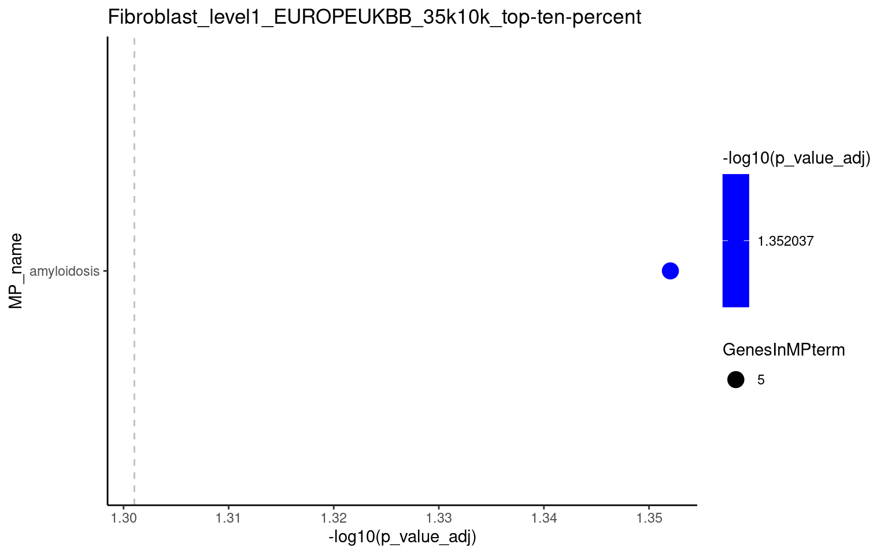
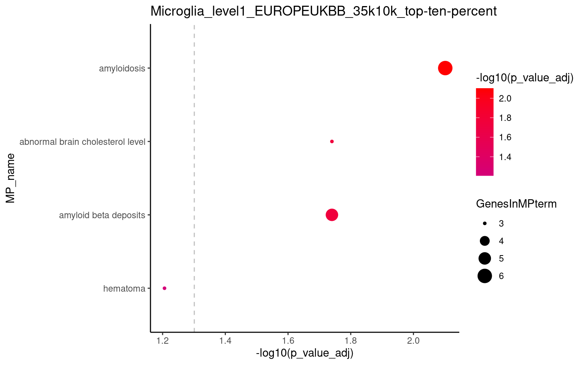
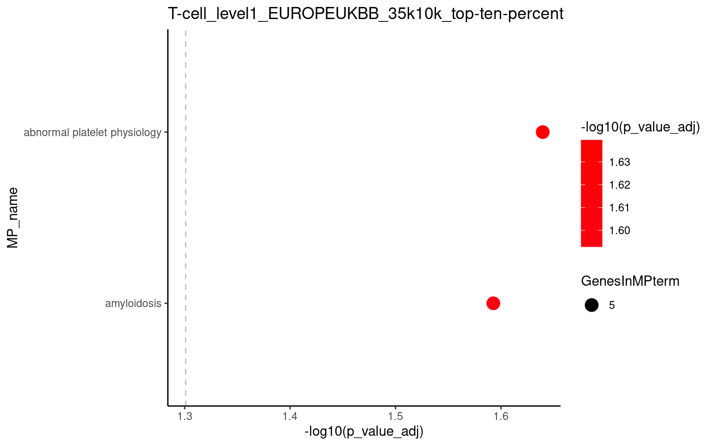
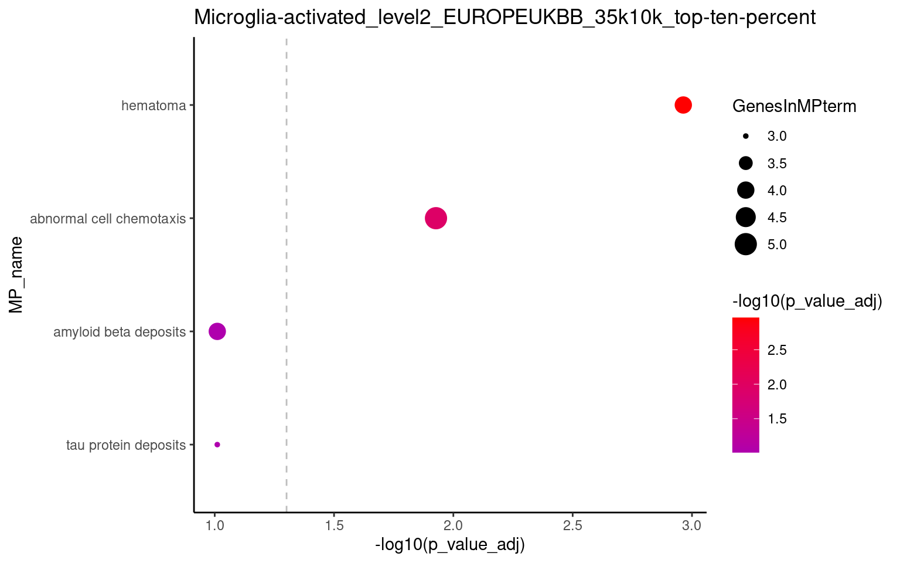
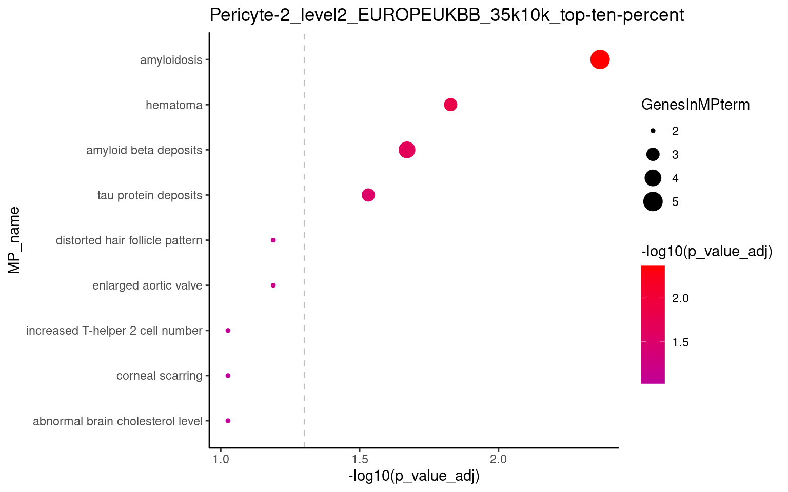

<!DOCTYPE html>
<html xmlns="http://www.w3.org/1999/xhtml" lang="en" xml:lang="en"><head>
    <meta charset="utf-8">
    <meta name="generator" content="quarto-1.5.54">

    <meta name="viewport" content="width=device-width, initial-scale=1.0, user-scalable=yes">


    <title>MP enrichment analysis</title>
    <style>
      code{white-space: pre-wrap;}
      span.smallcaps{font-variant: small-caps;}
      div.columns{display: flex; gap: min(4vw, 1.5em);}
      div.column{flex: auto; overflow-x: auto;}
      div.hanging-indent{margin-left: 1.5em; text-indent: -1.5em;}
      ul.task-list{list-style: none;}
      ul.task-list li input[type="checkbox"] {
        width: 0.8em;
        margin: 0 0.8em 0.2em -1em; /* quarto-specific, see https://github.com/quarto-dev/quarto-cli/issues/4556 */ 
        vertical-align: middle;
      }
      /* CSS for syntax highlighting */
      pre > code.sourceCode { white-space: pre; position: relative; }
      pre > code.sourceCode > span { line-height: 1.25; }
      pre > code.sourceCode > span:empty { height: 1.2em; }
      .sourceCode { overflow: visible; }
      code.sourceCode > span { color: inherit; text-decoration: inherit; }
      div.sourceCode { margin: 1em 0; }
      pre.sourceCode { margin: 0; }
      @media screen {
      div.sourceCode { overflow: auto; }
      }
      @media print {
      pre > code.sourceCode { white-space: pre-wrap; }
      pre > code.sourceCode > span { display: inline-block; text-indent: -5em; padding-left: 5em; }
      }
      pre.numberSource code
        { counter-reset: source-line 0; }
      pre.numberSource code > span
        { position: relative; left: -4em; counter-increment: source-line; }
      pre.numberSource code > span > a:first-child::before
        { content: counter(source-line);
          position: relative; left: -1em; text-align: right; vertical-align: baseline;
          border: none; display: inline-block;
          -webkit-touch-callout: none; -webkit-user-select: none;
          -khtml-user-select: none; -moz-user-select: none;
          -ms-user-select: none; user-select: none;
          padding: 0 4px; width: 4em;
        }
      pre.numberSource { margin-left: 3em;  padding-left: 4px; }
      div.sourceCode
        {   }
      @media screen {
      pre > code.sourceCode > span > a:first-child::before { text-decoration: underline; }
      }
    </style>

    <style>
      body.hypothesis-enabled #quarto-embed-header {
        padding-right: 36px;
      }

      #quarto-embed-header {
        height: 3em;
        width: 100%;
        display: flex;
        justify-content: space-between;
        align-items: center;
        border-bottom: solid 1px;
      }

      #quarto-embed-header h6 {
        font-size: 1.1em;
        padding-top: 0.6em;
        margin-left: 1em;
        margin-right: 1em;
        font-weight: 400;
      }

      #quarto-embed-header a.quarto-back-link,
      #quarto-embed-header a.quarto-download-embed {
        font-size: 0.8em;
        margin-top: 1em;
        margin-bottom: 1em;
        margin-left: 1em;
        margin-right: 1em;
      }

      .quarto-back-container {
        padding-left: 0.5em;
        display: flex;
      }

      .headroom {
          will-change: transform;
          transition: transform 200ms linear;
      }

      .headroom--pinned {
          transform: translateY(0%);
      }

      .headroom--unpinned {
          transform: translateY(-100%);
      }      
    </style>

    <script>
    window.document.addEventListener("DOMContentLoaded", function () {

      var header = window.document.querySelector("#quarto-embed-header");
      const titleBannerEl = window.document.querySelector("body > #title-block-header");
      if (titleBannerEl) {
        titleBannerEl.style.paddingTop = header.clientHeight + "px";
      }
      const contentEl = window.document.getElementById('quarto-content');
      for (const child of contentEl.children) {
        child.style.paddingTop = header.clientHeight + "px";
        child.style.marginTop = "1em";
      }

      // Use the article root if the `back` call doesn't work. This isn't perfect
      // but should typically work
      window.quartoBackToArticle = () => {
        var currentUrl = window.location.href;
        window.history.back();
        setTimeout(() => {
            // if location was not changed in 100 ms, then there is no history back
            if(currentUrl === window.location.href){              
                // redirect to site root
                window.location.href = "../../index.html";
            }
        }, 100);
      }

      const headroom = new window.Headroom(header, {
        tolerance: 5,
        onPin: function () {
        },
        onUnpin: function () {
        },
      });
      headroom.init();
    });
    </script>

    
<script src="../../site_libs/manuscript-notebook/headroom.min.js"></script>
<script src="../../site_libs/clipboard/clipboard.min.js"></script>
<script src="../../site_libs/quarto-html/quarto.js"></script>
<script src="../../site_libs/quarto-html/popper.min.js"></script>
<script src="../../site_libs/quarto-html/tippy.umd.min.js"></script>
<script src="../../site_libs/quarto-html/anchor.min.js"></script>
<link href="../../site_libs/quarto-html/tippy.css" rel="stylesheet">
<link href="../../site_libs/quarto-html/quarto-syntax-highlighting.css" rel="stylesheet" id="quarto-text-highlighting-styles">
<script src="../../site_libs/bootstrap/bootstrap.min.js"></script>
<link href="../../site_libs/bootstrap/bootstrap-icons.css" rel="stylesheet">
<link href="../../site_libs/bootstrap/bootstrap.min.css" rel="stylesheet" id="quarto-bootstrap" data-mode="light">
<script src="../../site_libs/quarto-contrib/glightbox/glightbox.min.js"></script>
<link href="../../site_libs/quarto-contrib/glightbox/glightbox.min.css" rel="stylesheet">
<link href="../../site_libs/quarto-contrib/glightbox/lightbox.css" rel="stylesheet">
     <script async="" src="https://hypothes.is/embed.js"></script>
<script>
  window.document.addEventListener("DOMContentLoaded", function (_event) {
    document.body.classList.add('hypothesis-enabled');
  });
</script>  
      </head>

  <body class="quarto-notebook">
    <div id="quarto-embed-header" class="headroom fixed-top bg-primary">
      
      <a onclick="window.quartoBackToArticle(); return false;" class="btn btn-primary quarto-back-link" href=""><i class="bi bi-caret-left"></i> Back to Article</a>
      <h6><i class="bi bi-journal-code"></i> MP enrichment analysis</h6>

            <a href="../../04_data_analysis/004_mouse_phenotypes/01_MP_enrichment.qmd" class="btn btn-primary quarto-download-embed" download="01_MP_enrichment.qmd">Download Source</a>
          </div>

     <header id="title-block-header" class="quarto-title-block default toc-left page-columns page-full">
  <div class="quarto-title-banner page-columns page-full">
    <div class="quarto-title column-body">
      <h1 class="title">MP enrichment analysis</h1>
          </div>

    
    <div class="quarto-title-meta-container">
      <div class="quarto-title-meta-column-start">
        
        <div class="quarto-title-meta">

                
          
                
              </div>
      </div>
      <div class="quarto-title-meta-column-end quarto-other-formats-target">
      </div>
    </div>


    <div class="quarto-other-links-text-target">
    </div>  </div>
</header><div id="quarto-content" class="page-columns page-rows-contents page-layout-article toc-left">
<div id="quarto-sidebar-toc-left" class="sidebar toc-left">
  <nav id="TOC" role="doc-toc" class="toc-active">
    <h2 id="toc-title">Table of contents</h2>
   
  <ul>
  <li><a href="#mpo-annotation-obo" id="toc-mpo-annotation-obo" class="nav-link active" data-scroll-target="#mpo-annotation-obo">MPO annotation obo</a>
  <ul class="collapse">
  <li><a href="#select-mp-terms" id="toc-select-mp-terms" class="nav-link" data-scroll-target="#select-mp-terms">Select MP terms</a></li>
  </ul></li>
  <li><a href="#mpi-annotations" id="toc-mpi-annotations" class="nav-link" data-scroll-target="#mpi-annotations">MPI annotations</a>
  <ul class="collapse">
  <li><a href="#select-terms-based-on-gene-length" id="toc-select-terms-based-on-gene-length" class="nav-link" data-scroll-target="#select-terms-based-on-gene-length">Select terms based on gene length</a></li>
  </ul></li>
  <li><a href="#genes-of-interest" id="toc-genes-of-interest" class="nav-link" data-scroll-target="#genes-of-interest">Genes of interest</a></li>
  <li><a href="#enrichment-analysis" id="toc-enrichment-analysis" class="nav-link" data-scroll-target="#enrichment-analysis">Enrichment analysis</a></li>
  <li><a href="#overview-results-table" id="toc-overview-results-table" class="nav-link" data-scroll-target="#overview-results-table">Overview results table</a></li>
  <li><a href="#save-results" id="toc-save-results" class="nav-link" data-scroll-target="#save-results">Save results</a></li>
  <li><a href="#check-genes-in-terms-of-interest" id="toc-check-genes-in-terms-of-interest" class="nav-link" data-scroll-target="#check-genes-in-terms-of-interest">Check genes in terms of interest</a></li>
  </ul>
</nav>
</div>
<div id="quarto-margin-sidebar" class="sidebar margin-sidebar zindex-bottom">
</div>
<main class="content quarto-banner-title-block" id="quarto-document-content">      

       <div class="cell-container"><div class="cell-decorator"><pre>In [1]:</pre></div><div class="cell">
<div class="sourceCode cell-code" id="cb1"><pre class="sourceCode r code-with-copy"><code class="sourceCode r"><span id="cb1-1"><a href="#cb1-1" aria-hidden="true" tabindex="-1"></a><span class="co">#| label: setup</span></span>
<span id="cb1-2"><a href="#cb1-2" aria-hidden="true" tabindex="-1"></a></span>
<span id="cb1-3"><a href="#cb1-3" aria-hidden="true" tabindex="-1"></a><span class="fu">library</span>(simona)</span></code><button title="Copy to Clipboard" class="code-copy-button"><i class="bi"></i></button></pre></div>
<div class="cell-output cell-output-stderr">
<pre><code>========================================
simona version 1.2.0
Bioconductor page: http://bioconductor.org/packages/simona/
Github page: https://github.com/jokergoo/simona
Documentation: https://jokergoo.github.io/simona/

If you use it in published research, please cite:
Gu, Z. simona: a Comprehensive R package for Semantic Similarity 
  Analysis on Bio-Ontologies. bioRxiv 2023.

This message can be suppressed by:
  suppressPackageStartupMessages(library(simona))
========================================</code></pre>
</div>
<div class="sourceCode cell-code" id="cb3"><pre class="sourceCode r code-with-copy"><code class="sourceCode r"><span id="cb3-1"><a href="#cb3-1" aria-hidden="true" tabindex="-1"></a><span class="co">#| label: setup</span></span>
<span id="cb3-2"><a href="#cb3-2" aria-hidden="true" tabindex="-1"></a></span>
<span id="cb3-3"><a href="#cb3-3" aria-hidden="true" tabindex="-1"></a><span class="fu">library</span>(stringr)</span>
<span id="cb3-4"><a href="#cb3-4" aria-hidden="true" tabindex="-1"></a><span class="fu">library</span>(ggplot2)</span>
<span id="cb3-5"><a href="#cb3-5" aria-hidden="true" tabindex="-1"></a><span class="fu">library</span>(ggsci)</span>
<span id="cb3-6"><a href="#cb3-6" aria-hidden="true" tabindex="-1"></a><span class="fu">library</span>(dplyr)</span></code><button title="Copy to Clipboard" class="code-copy-button"><i class="bi"></i></button></pre></div>
<div class="cell-output cell-output-stderr">
<pre><code>
Attaching package: 'dplyr'</code></pre>
</div>
<div class="cell-output cell-output-stderr">
<pre><code>The following objects are masked from 'package:stats':

    filter, lag</code></pre>
</div>
<div class="cell-output cell-output-stderr">
<pre><code>The following objects are masked from 'package:base':

    intersect, setdiff, setequal, union</code></pre>
</div>
<div class="sourceCode cell-code" id="cb7"><pre class="sourceCode r code-with-copy"><code class="sourceCode r"><span id="cb7-1"><a href="#cb7-1" aria-hidden="true" tabindex="-1"></a><span class="co">#| label: setup</span></span>
<span id="cb7-2"><a href="#cb7-2" aria-hidden="true" tabindex="-1"></a></span>
<span id="cb7-3"><a href="#cb7-3" aria-hidden="true" tabindex="-1"></a><span class="fu">library</span>(purrr)</span>
<span id="cb7-4"><a href="#cb7-4" aria-hidden="true" tabindex="-1"></a><span class="fu">library</span>(tidyr)</span>
<span id="cb7-5"><a href="#cb7-5" aria-hidden="true" tabindex="-1"></a><span class="fu">library</span>(data.table)</span></code><button title="Copy to Clipboard" class="code-copy-button"><i class="bi"></i></button></pre></div>
<div class="cell-output cell-output-stderr">
<pre><code>
Attaching package: 'data.table'</code></pre>
</div>
<div class="cell-output cell-output-stderr">
<pre><code>The following object is masked from 'package:purrr':

    transpose</code></pre>
</div>
<div class="cell-output cell-output-stderr">
<pre><code>The following objects are masked from 'package:dplyr':

    between, first, last</code></pre>
</div>
</div></div>
<section id="mpo-annotation-obo" class="level1">
<h1>MPO annotation obo</h1>
<div class="cell-container"><div class="cell-decorator"><pre>In [2]:</pre></div><div class="cell">
<div class="sourceCode cell-code" id="cb11"><pre class="sourceCode r code-with-copy"><code class="sourceCode r"><span id="cb11-1"><a href="#cb11-1" aria-hidden="true" tabindex="-1"></a>mp_obo <span class="ot">&lt;-</span> simona<span class="sc">::</span><span class="fu">import_obo</span>(<span class="at">file =</span> here<span class="sc">::</span><span class="fu">here</span>(<span class="st">"03_data/996_mouse_phenotype_inputs/MPheno_OBO.ontology"</span>))</span></code><button title="Copy to Clipboard" class="code-copy-button"><i class="bi"></i></button></pre></div>
<div class="cell-output cell-output-stderr">
<pre><code>Parsing [Typedef] sections in the obo file [2/2]</code></pre>
</div>
<div class="cell-output cell-output-stderr">
<pre><code>Parsing [Term] sections in the obo file [1000/14420]Parsing [Term] sections in the obo file [2000/14420]Parsing [Term] sections in the obo file [3000/14420]Parsing [Term] sections in the obo file [4000/14420]Parsing [Term] sections in the obo file [5000/14420]Parsing [Term] sections in the obo file [6000/14420]Parsing [Term] sections in the obo file [7000/14420]Parsing [Term] sections in the obo file [8000/14420]Parsing [Term] sections in the obo file [9000/14420]Parsing [Term] sections in the obo file [10000/14420]Parsing [Term] sections in the obo file [11000/14420]Parsing [Term] sections in the obo file [12000/14420]Parsing [Term] sections in the obo file [13000/14420]Parsing [Term] sections in the obo file [14000/14420]Parsing [Term] sections in the obo file [14420/14420]
remove 450 obsolete terms</code></pre>
</div>
</div></div>
<ul>
<li><p>Using the MP annotation in obo format downloaded from <a href="https://www.informatics.jax.org/downloads/reports/index.html">MGI</a>.</p></li>
<li><p>Version mp, releases/2024-02-07/mp.obo.</p></li>
</ul>
<section id="select-mp-terms" class="level2">
<h2 class="anchored" data-anchor-id="select-mp-terms">Select MP terms</h2>
<ul>
<li>i.e.&nbsp;based on shortest distance from root.</li>
</ul>
<div class="cell-container"><div class="cell-decorator"><pre>In [3]:</pre></div><div class="cell">
<div class="sourceCode cell-code" id="cb14"><pre class="sourceCode r code-with-copy"><code class="sourceCode r"><span id="cb14-1"><a href="#cb14-1" aria-hidden="true" tabindex="-1"></a><span class="co"># Get the distance from the root</span></span>
<span id="cb14-2"><a href="#cb14-2" aria-hidden="true" tabindex="-1"></a>dfr <span class="ot">&lt;-</span> <span class="fu">dag_shortest_dist_from_root</span>(mp_obo)</span>
<span id="cb14-3"><a href="#cb14-3" aria-hidden="true" tabindex="-1"></a><span class="fu">summary</span>(dfr)</span></code><button title="Copy to Clipboard" class="code-copy-button"><i class="bi"></i></button></pre></div>
<div class="cell-output cell-output-stdout">
<pre><code>   Min. 1st Qu.  Median    Mean 3rd Qu.    Max. 
  0.000   4.000   5.000   5.604   7.000  11.000 </code></pre>
</div>
<div class="sourceCode cell-code" id="cb16"><pre class="sourceCode r code-with-copy"><code class="sourceCode r"><span id="cb16-1"><a href="#cb16-1" aria-hidden="true" tabindex="-1"></a><span class="co"># Select terms based on distance from the root</span></span>
<span id="cb16-2"><a href="#cb16-2" aria-hidden="true" tabindex="-1"></a>mp_selected <span class="ot">&lt;-</span> <span class="fu">names</span>(dfr)[<span class="fu">which</span>(dfr <span class="sc">&lt;=</span> <span class="dv">1</span>)]</span>
<span id="cb16-3"><a href="#cb16-3" aria-hidden="true" tabindex="-1"></a></span>
<span id="cb16-4"><a href="#cb16-4" aria-hidden="true" tabindex="-1"></a><span class="co"># Select based on specific terms </span></span>
<span id="cb16-5"><a href="#cb16-5" aria-hidden="true" tabindex="-1"></a><span class="co"># mp_selected &lt;- str_detect(mp_obo@elementMetadata$name, "pain")</span></span></code><button title="Copy to Clipboard" class="code-copy-button"><i class="bi"></i></button></pre></div>
</div></div>
</section>
</section>
<section id="mpi-annotations" class="level1">
<h1>MPI annotations</h1>
<ul>
<li><p>MP_MGI_20240207_DeepAnot is a two file tab separated file:</p></li>
<li><p>Contains <strong>deep</strong> MP annotations (propagated to the ancestors of a term(. If a gene is annotated to a MP term is also annotated to the MP ancestor terms.</p></li>
<li><p><strong>Column 1</strong> contains MP IDs.</p></li>
<li><p><strong>Column 2</strong> contains all the MGI genes annotated to the MP term.</p></li>
</ul>
<div class="cell-container"><div class="cell-decorator"><pre>In [4]:</pre></div><div class="cell">
<div class="sourceCode cell-code" id="cb17"><pre class="sourceCode r code-with-copy"><code class="sourceCode r"><span id="cb17-1"><a href="#cb17-1" aria-hidden="true" tabindex="-1"></a><span class="co"># MP deep annotation </span></span>
<span id="cb17-2"><a href="#cb17-2" aria-hidden="true" tabindex="-1"></a><span class="co"># MP term and MGI (comma separated)</span></span>
<span id="cb17-3"><a href="#cb17-3" aria-hidden="true" tabindex="-1"></a>mp_anot <span class="ot">&lt;-</span> <span class="fu">read.table</span>(here<span class="sc">::</span><span class="fu">here</span>(<span class="st">"03_data/996_mouse_phenotype_inputs/MP_MGI_20240207_DeepAnot.txt"</span>), <span class="at">sep =</span> <span class="st">"</span><span class="sc">\t</span><span class="st">"</span>, <span class="at">header =</span> <span class="cn">FALSE</span>)</span>
<span id="cb17-4"><a href="#cb17-4" aria-hidden="true" tabindex="-1"></a><span class="fu">colnames</span>(mp_anot) <span class="ot">&lt;-</span> <span class="fu">c</span>(<span class="st">"MP_ID"</span>, <span class="st">"MGI_IDS"</span>)</span>
<span id="cb17-5"><a href="#cb17-5" aria-hidden="true" tabindex="-1"></a></span>
<span id="cb17-6"><a href="#cb17-6" aria-hidden="true" tabindex="-1"></a><span class="co"># Background population # all annotated genes with at least one MP term</span></span>
<span id="cb17-7"><a href="#cb17-7" aria-hidden="true" tabindex="-1"></a>bg <span class="ot">&lt;-</span> <span class="fu">unique</span>(<span class="fu">unlist</span>(<span class="fu">str_split</span>(mp_anot<span class="sc">$</span>MGI_IDS, <span class="st">","</span>)))</span>
<span id="cb17-8"><a href="#cb17-8" aria-hidden="true" tabindex="-1"></a><span class="co"># n = 22665 MGIs </span></span>
<span id="cb17-9"><a href="#cb17-9" aria-hidden="true" tabindex="-1"></a></span>
<span id="cb17-10"><a href="#cb17-10" aria-hidden="true" tabindex="-1"></a><span class="co"># Check that selected MP are in the MP annotation</span></span>
<span id="cb17-11"><a href="#cb17-11" aria-hidden="true" tabindex="-1"></a>mp_selected <span class="ot">&lt;-</span> <span class="fu">intersect</span>(mp_selected, mp_anot<span class="sc">$</span>MP_ID)</span></code><button title="Copy to Clipboard" class="code-copy-button"><i class="bi"></i></button></pre></div>
</div></div>
<section id="select-terms-based-on-gene-length" class="level2">
<h2 class="anchored" data-anchor-id="select-terms-based-on-gene-length">Select terms based on gene length</h2>
<div class="cell-container"><div class="cell-decorator"><pre>In [5]:</pre></div><div class="cell">
<div class="sourceCode cell-code" id="cb18"><pre class="sourceCode r code-with-copy"><code class="sourceCode r"><span id="cb18-1"><a href="#cb18-1" aria-hidden="true" tabindex="-1"></a><span class="co"># Based on the number of genes annotated in each term</span></span>
<span id="cb18-2"><a href="#cb18-2" aria-hidden="true" tabindex="-1"></a>nterms <span class="ot">&lt;-</span> <span class="fu">sapply</span>(mp_anot<span class="sc">$</span>MGI_IDS, <span class="at">FUN =</span> <span class="cf">function</span>(x) {</span>
<span id="cb18-3"><a href="#cb18-3" aria-hidden="true" tabindex="-1"></a>    a <span class="ot">&lt;-</span> <span class="fu">unlist</span>(<span class="fu">str_split</span>(<span class="at">string =</span> x, <span class="at">pattern =</span> <span class="st">","</span>))</span>
<span id="cb18-4"><a href="#cb18-4" aria-hidden="true" tabindex="-1"></a>    b <span class="ot">&lt;-</span> <span class="fu">length</span>(a)</span>
<span id="cb18-5"><a href="#cb18-5" aria-hidden="true" tabindex="-1"></a>    <span class="fu">return</span>(b)</span>
<span id="cb18-6"><a href="#cb18-6" aria-hidden="true" tabindex="-1"></a>})</span>
<span id="cb18-7"><a href="#cb18-7" aria-hidden="true" tabindex="-1"></a><span class="fu">names</span>(nterms) <span class="ot">&lt;-</span> mp_anot<span class="sc">$</span>MP_ID</span></code><button title="Copy to Clipboard" class="code-copy-button"><i class="bi"></i></button></pre></div>
</div></div>
<div class="cell-container"><div class="cell-decorator"><pre>In [6]:</pre></div><div class="cell">
<div class="sourceCode cell-code" id="cb19"><pre class="sourceCode r code-with-copy"><code class="sourceCode r"><span id="cb19-1"><a href="#cb19-1" aria-hidden="true" tabindex="-1"></a>gene_length_term_selection <span class="ot">=</span> <span class="cn">TRUE</span></span>
<span id="cb19-2"><a href="#cb19-2" aria-hidden="true" tabindex="-1"></a></span>
<span id="cb19-3"><a href="#cb19-3" aria-hidden="true" tabindex="-1"></a><span class="cf">if</span> (gene_length_term_selection) {</span>
<span id="cb19-4"><a href="#cb19-4" aria-hidden="true" tabindex="-1"></a>  <span class="co"># Select from 10 to 200, n = 5087</span></span>
<span id="cb19-5"><a href="#cb19-5" aria-hidden="true" tabindex="-1"></a>  mp_selected <span class="ot">&lt;-</span></span>
<span id="cb19-6"><a href="#cb19-6" aria-hidden="true" tabindex="-1"></a>    <span class="fu">names</span>(nterms)[<span class="fu">intersect</span>(<span class="fu">which</span>(nterms <span class="sc">&gt;</span> <span class="dv">10</span>), <span class="fu">which</span>(nterms <span class="sc">&lt;</span> <span class="dv">200</span>))]</span>
<span id="cb19-7"><a href="#cb19-7" aria-hidden="true" tabindex="-1"></a>  </span>
<span id="cb19-8"><a href="#cb19-8" aria-hidden="true" tabindex="-1"></a>  <span class="co"># Check that selected MP are in the MP annotation</span></span>
<span id="cb19-9"><a href="#cb19-9" aria-hidden="true" tabindex="-1"></a>  mp_selected <span class="ot">&lt;-</span> <span class="fu">intersect</span>(mp_selected, mp_anot<span class="sc">$</span>MP_ID)</span>
<span id="cb19-10"><a href="#cb19-10" aria-hidden="true" tabindex="-1"></a>}</span></code><button title="Copy to Clipboard" class="code-copy-button"><i class="bi"></i></button></pre></div>
</div></div>
</section>
</section>
<section id="genes-of-interest" class="level1">
<h1>Genes of interest</h1>
<p>Here’s code to get the mouse ensembl homolog IDs to then get the MGI IDs</p>
<div class="cell-container"><div class="cell-decorator"><pre>In [7]:</pre></div><div class="cell">
<div class="sourceCode cell-code" id="cb20"><pre class="sourceCode r code-with-copy"><code class="sourceCode r"><span id="cb20-1"><a href="#cb20-1" aria-hidden="true" tabindex="-1"></a><span class="co">#| eval: false</span></span>
<span id="cb20-2"><a href="#cb20-2" aria-hidden="true" tabindex="-1"></a>sce <span class="ot">&lt;-</span> readr<span class="sc">::</span><span class="fu">read_rds</span>(here<span class="sc">::</span><span class="fu">here</span>(<span class="st">"03_data/990_processed_data/001_snrnaseq"</span>,</span>
<span id="cb20-3"><a href="#cb20-3" aria-hidden="true" tabindex="-1"></a>                                  <span class="st">"11_cell_network_interactions"</span>,</span>
<span id="cb20-4"><a href="#cb20-4" aria-hidden="true" tabindex="-1"></a>                                  <span class="st">"scflow-sce-annotated.rds"</span>))</span>
<span id="cb20-5"><a href="#cb20-5" aria-hidden="true" tabindex="-1"></a></span>
<span id="cb20-6"><a href="#cb20-6" aria-hidden="true" tabindex="-1"></a>df <span class="ot">&lt;-</span> <span class="fu">data.frame</span>(<span class="at">gene =</span> <span class="fu">rownames</span>(sce<span class="sc">@</span>assays<span class="sc">$</span>RNA<span class="sc">@</span>data), <span class="at">ensembl =</span> <span class="fu">rownames</span>(sce<span class="sc">@</span>assays<span class="sc">$</span>RNA<span class="sc">@</span>counts))</span>
<span id="cb20-7"><a href="#cb20-7" aria-hidden="true" tabindex="-1"></a></span>
<span id="cb20-8"><a href="#cb20-8" aria-hidden="true" tabindex="-1"></a>ensembl <span class="ot">&lt;-</span> <span class="fu">useMart</span>(<span class="st">"ensembl"</span>, <span class="at">dataset =</span> <span class="st">"hsapiens_gene_ensembl"</span>)</span>
<span id="cb20-9"><a href="#cb20-9" aria-hidden="true" tabindex="-1"></a><span class="fu">listAttributes</span>(ensembl)[<span class="fu">grepl</span>(<span class="st">"mmusculus"</span>, <span class="fu">listAttributes</span>(ensembl)<span class="sc">$</span>name, <span class="at">ignore.case =</span> T),]</span>
<span id="cb20-10"><a href="#cb20-10" aria-hidden="true" tabindex="-1"></a></span>
<span id="cb20-11"><a href="#cb20-11" aria-hidden="true" tabindex="-1"></a>mouse_orthologs <span class="ot">&lt;-</span> <span class="fu">getBM</span>(<span class="at">attributes =</span> <span class="fu">c</span>(<span class="st">'ensembl_gene_id'</span>, <span class="st">'mmusculus_homolog_ensembl_gene'</span>),</span>
<span id="cb20-12"><a href="#cb20-12" aria-hidden="true" tabindex="-1"></a>                         <span class="at">filters =</span> <span class="st">'ensembl_gene_id'</span>,</span>
<span id="cb20-13"><a href="#cb20-13" aria-hidden="true" tabindex="-1"></a>                         <span class="at">values =</span> df<span class="sc">$</span>ensembl,</span>
<span id="cb20-14"><a href="#cb20-14" aria-hidden="true" tabindex="-1"></a>                         <span class="at">mart =</span> ensembl)</span>
<span id="cb20-15"><a href="#cb20-15" aria-hidden="true" tabindex="-1"></a></span>
<span id="cb20-16"><a href="#cb20-16" aria-hidden="true" tabindex="-1"></a><span class="fu">library</span>(org.Mm.eg.db)</span>
<span id="cb20-17"><a href="#cb20-17" aria-hidden="true" tabindex="-1"></a>mgis <span class="ot">&lt;-</span> AnnotationDbi<span class="sc">::</span><span class="fu">mapIds</span>(org.Mm.eg.db, <span class="fu">unique</span>(mouse_orthologs<span class="sc">$</span>mmusculus_homolog_ensembl_gene), <span class="st">"MGI"</span>,<span class="st">"ENSEMBL"</span>)</span>
<span id="cb20-18"><a href="#cb20-18" aria-hidden="true" tabindex="-1"></a>mgis <span class="ot">&lt;-</span> mgis[<span class="sc">!</span><span class="fu">is.na</span>(mgis)] <span class="sc">|&gt;</span> <span class="fu">unlist</span>()</span>
<span id="cb20-19"><a href="#cb20-19" aria-hidden="true" tabindex="-1"></a>mgis <span class="ot">&lt;-</span> <span class="fu">tibble</span>(<span class="at">mouse_ensembl =</span> <span class="fu">names</span>(x), <span class="at">mgi =</span> x)</span>
<span id="cb20-20"><a href="#cb20-20" aria-hidden="true" tabindex="-1"></a>mouse_orthologs <span class="ot">&lt;-</span> <span class="fu">left_join</span>(mgis, mouse_orthologs, <span class="at">by =</span> <span class="fu">join_by</span>(mouse_ensembl <span class="sc">==</span> mmusculus_homolog_ensembl_gene))</span>
<span id="cb20-21"><a href="#cb20-21" aria-hidden="true" tabindex="-1"></a><span class="co"># Add gene symbols</span></span>
<span id="cb20-22"><a href="#cb20-22" aria-hidden="true" tabindex="-1"></a>mouse_orthologs <span class="ot">&lt;-</span> <span class="fu">left_join</span>(mouse_orthologs, df, <span class="at">by =</span> <span class="fu">join_by</span>(ensembl_gene_id <span class="sc">==</span> ensembl))</span>
<span id="cb20-23"><a href="#cb20-23" aria-hidden="true" tabindex="-1"></a></span>
<span id="cb20-24"><a href="#cb20-24" aria-hidden="true" tabindex="-1"></a><span class="co"># For some reason there double "MGI:" in the IDs, need to remove this</span></span>
<span id="cb20-25"><a href="#cb20-25" aria-hidden="true" tabindex="-1"></a>mouse_orthologs<span class="sc">$</span>mgi <span class="ot">&lt;-</span> <span class="fu">str_remove</span>(mouse_orthologs<span class="sc">$</span>mgi, <span class="st">"MGI:"</span>)</span>
<span id="cb20-26"><a href="#cb20-26" aria-hidden="true" tabindex="-1"></a></span>
<span id="cb20-27"><a href="#cb20-27" aria-hidden="true" tabindex="-1"></a><span class="co"># Get entrez IDs as well for MAGMA genes</span></span>
<span id="cb20-28"><a href="#cb20-28" aria-hidden="true" tabindex="-1"></a>entrez_ids <span class="ot">&lt;-</span> <span class="fu">getBM</span>(<span class="at">attributes =</span> <span class="fu">c</span>(<span class="st">'ensembl_gene_id'</span>, <span class="st">'entrezgene_id'</span>),</span>
<span id="cb20-29"><a href="#cb20-29" aria-hidden="true" tabindex="-1"></a>                         <span class="at">filters =</span> <span class="st">'ensembl_gene_id'</span>,</span>
<span id="cb20-30"><a href="#cb20-30" aria-hidden="true" tabindex="-1"></a>                         <span class="at">values =</span> mouse_orthologs<span class="sc">$</span>ensembl_gene_id,</span>
<span id="cb20-31"><a href="#cb20-31" aria-hidden="true" tabindex="-1"></a>                         <span class="at">mart =</span> ensembl)</span>
<span id="cb20-32"><a href="#cb20-32" aria-hidden="true" tabindex="-1"></a></span>
<span id="cb20-33"><a href="#cb20-33" aria-hidden="true" tabindex="-1"></a>mouse_orthologs <span class="ot">&lt;-</span> <span class="fu">left_join</span>(mouse_orthologs, entrez_ids, <span class="at">by =</span> <span class="fu">join_by</span>(ensembl_gene_id))</span>
<span id="cb20-34"><a href="#cb20-34" aria-hidden="true" tabindex="-1"></a><span class="co"># Save ID translations</span></span>
<span id="cb20-35"><a href="#cb20-35" aria-hidden="true" tabindex="-1"></a>readr<span class="sc">::</span><span class="fu">write_tsv</span>(mouse_orthologs, here<span class="sc">::</span><span class="fu">here</span>(<span class="st">"03_data/996_mouse_phenotype_inputs/mouse_ortholog_ids.tsv"</span>))</span></code><button title="Copy to Clipboard" class="code-copy-button"><i class="bi"></i></button></pre></div>
</div></div>
<div class="cell-container"><div class="cell-decorator"><pre>In [8]:</pre></div><div class="cell">
<div class="sourceCode cell-code" id="cb21"><pre class="sourceCode r code-with-copy"><code class="sourceCode r"><span id="cb21-1"><a href="#cb21-1" aria-hidden="true" tabindex="-1"></a><span class="co"># Get ID translator</span></span>
<span id="cb21-2"><a href="#cb21-2" aria-hidden="true" tabindex="-1"></a>id_translate <span class="ot">&lt;-</span> readr<span class="sc">::</span><span class="fu">read_tsv</span>(here<span class="sc">::</span><span class="fu">here</span>(<span class="st">"03_data/996_mouse_phenotype_inputs/mouse_ortholog_ids.tsv"</span>))</span></code><button title="Copy to Clipboard" class="code-copy-button"><i class="bi"></i></button></pre></div>
<div class="cell-output cell-output-stderr">
<pre><code>Rows: 18170 Columns: 5
── Column specification ────────────────────────────────────────────────────────
Delimiter: "\t"
chr (4): mouse_ensembl, mgi, ensembl_gene_id, gene
dbl (1): entrezgene_id

ℹ Use `spec()` to retrieve the full column specification for this data.
ℹ Specify the column types or set `show_col_types = FALSE` to quiet this message.</code></pre>
</div>
<div class="sourceCode cell-code" id="cb23"><pre class="sourceCode r code-with-copy"><code class="sourceCode r"><span id="cb23-1"><a href="#cb23-1" aria-hidden="true" tabindex="-1"></a><span class="co"># Read in differential genes with no APOE</span></span>
<span id="cb23-2"><a href="#cb23-2" aria-hidden="true" tabindex="-1"></a>res <span class="ot">&lt;-</span> readr<span class="sc">::</span><span class="fu">read_csv</span>(here<span class="sc">::</span><span class="fu">here</span>(<span class="st">"03_data/990_processed_data/001_snrnaseq/08_pseudobulk/pseudobulk_ad-vs-control_deseq2_subtype-annotated_no-apoe.csv"</span>)) <span class="sc">%&gt;%</span></span>
<span id="cb23-3"><a href="#cb23-3" aria-hidden="true" tabindex="-1"></a>  <span class="fu">na.omit</span>() <span class="sc">|&gt;</span></span>
<span id="cb23-4"><a href="#cb23-4" aria-hidden="true" tabindex="-1"></a>  dplyr<span class="sc">::</span><span class="fu">filter</span>(padj <span class="sc">&lt;</span> <span class="fl">0.05</span>) <span class="sc">|&gt;</span></span>
<span id="cb23-5"><a href="#cb23-5" aria-hidden="true" tabindex="-1"></a>  dplyr<span class="sc">::</span><span class="fu">filter</span>(<span class="sc">!</span>celltype <span class="sc">%in%</span> <span class="fu">c</span>(<span class="st">"ambiguous"</span>, <span class="st">"low-feature-cells"</span>)) <span class="sc">|&gt;</span></span>
<span id="cb23-6"><a href="#cb23-6" aria-hidden="true" tabindex="-1"></a>  dplyr<span class="sc">::</span><span class="fu">left_join</span>(id_translate, <span class="at">by =</span> <span class="fu">join_by</span>(gene))</span></code><button title="Copy to Clipboard" class="code-copy-button"><i class="bi"></i></button></pre></div>
<div class="cell-output cell-output-stderr">
<pre><code>Rows: 996222 Columns: 9
── Column specification ────────────────────────────────────────────────────────
Delimiter: ","
chr (3): gene, celltype, deg_direction
dbl (6): baseMean, log2FoldChange, lfcSE, stat, pvalue, padj

ℹ Use `spec()` to retrieve the full column specification for this data.
ℹ Specify the column types or set `show_col_types = FALSE` to quiet this message.</code></pre>
</div>
<div class="cell-output cell-output-stderr">
<pre><code>Warning in dplyr::left_join(dplyr::filter(dplyr::filter(readr::read_csv(here::here("03_data/990_processed_data/001_snrnaseq/08_pseudobulk/pseudobulk_ad-vs-control_deseq2_subtype-annotated_no-apoe.csv")) %&gt;% : Detected an unexpected many-to-many relationship between `x` and `y`.
ℹ Row 41 of `x` matches multiple rows in `y`.
ℹ Row 5833 of `y` matches multiple rows in `x`.
ℹ If a many-to-many relationship is expected, set `relationship =
  "many-to-many"` to silence this warning.</code></pre>
</div>
<div class="sourceCode cell-code" id="cb26"><pre class="sourceCode r code-with-copy"><code class="sourceCode r"><span id="cb26-1"><a href="#cb26-1" aria-hidden="true" tabindex="-1"></a><span class="co"># Get sig genes per celltype as a named list</span></span>
<span id="cb26-2"><a href="#cb26-2" aria-hidden="true" tabindex="-1"></a>genes_sig <span class="ot">&lt;-</span> <span class="fu">split</span>(res<span class="sc">$</span>mgi, res<span class="sc">$</span>celltype)</span>
<span id="cb26-3"><a href="#cb26-3" aria-hidden="true" tabindex="-1"></a><span class="fu">names</span>(genes_sig) <span class="ot">&lt;-</span> <span class="fu">paste0</span>(<span class="fu">names</span>(genes_sig), <span class="st">"_pseudobulk"</span>)</span></code><button title="Copy to Clipboard" class="code-copy-button"><i class="bi"></i></button></pre></div>
</div></div>
<div class="cell-container"><div class="cell-decorator"><pre>In [9]:</pre></div><div class="cell">
<div class="sourceCode cell-code" id="cb27"><pre class="sourceCode r code-with-copy"><code class="sourceCode r"><span id="cb27-1"><a href="#cb27-1" aria-hidden="true" tabindex="-1"></a><span class="co"># Get sig MAGMA celltype sig genes</span></span>
<span id="cb27-2"><a href="#cb27-2" aria-hidden="true" tabindex="-1"></a>magma_sig <span class="ot">&lt;-</span></span>
<span id="cb27-3"><a href="#cb27-3" aria-hidden="true" tabindex="-1"></a>  readr<span class="sc">::</span><span class="fu">read_tsv</span>(here<span class="sc">::</span><span class="fu">here</span>(</span>
<span id="cb27-4"><a href="#cb27-4" aria-hidden="true" tabindex="-1"></a>    <span class="st">"03_data/994_magma_inputs/results/sig_celltype_sig_genes.tsv"</span></span>
<span id="cb27-5"><a href="#cb27-5" aria-hidden="true" tabindex="-1"></a>  )) <span class="sc">|&gt;</span></span>
<span id="cb27-6"><a href="#cb27-6" aria-hidden="true" tabindex="-1"></a>  janitor<span class="sc">::</span><span class="fu">clean_names</span>() <span class="sc">|&gt;</span></span>
<span id="cb27-7"><a href="#cb27-7" aria-hidden="true" tabindex="-1"></a>  dplyr<span class="sc">::</span><span class="fu">rename</span>(<span class="at">entrezgene_id =</span> gene) <span class="sc">|&gt;</span></span>
<span id="cb27-8"><a href="#cb27-8" aria-hidden="true" tabindex="-1"></a>  <span class="co"># Exclude the top one percents</span></span>
<span id="cb27-9"><a href="#cb27-9" aria-hidden="true" tabindex="-1"></a>  dplyr<span class="sc">::</span><span class="fu">filter</span>(<span class="sc">!</span>percent <span class="sc">==</span> <span class="st">"top-one-percent"</span>) <span class="sc">|&gt;</span></span>
<span id="cb27-10"><a href="#cb27-10" aria-hidden="true" tabindex="-1"></a>  <span class="co"># Filter to level 2</span></span>
<span id="cb27-11"><a href="#cb27-11" aria-hidden="true" tabindex="-1"></a>  <span class="co">#dplyr::filter(celltype_level == "level2") |&gt;</span></span>
<span id="cb27-12"><a href="#cb27-12" aria-hidden="true" tabindex="-1"></a>  dplyr<span class="sc">::</span><span class="fu">filter</span>(input_gene_list <span class="sc">==</span> <span class="st">"all_controls"</span>) <span class="sc">|&gt;</span></span>
<span id="cb27-13"><a href="#cb27-13" aria-hidden="true" tabindex="-1"></a>  dplyr<span class="sc">::</span><span class="fu">filter</span>(padj <span class="sc">&lt;</span> <span class="fl">0.05</span>)</span></code><button title="Copy to Clipboard" class="code-copy-button"><i class="bi"></i></button></pre></div>
<div class="cell-output cell-output-stderr">
<pre><code>Warning: One or more parsing issues, call `problems()` on your data frame for details,
e.g.:
  dat &lt;- vroom(...)
  problems(dat)</code></pre>
</div>
<div class="cell-output cell-output-stderr">
<pre><code>Rows: 169727 Columns: 24
── Column specification ────────────────────────────────────────────────────────
Delimiter: "\t"
chr (10): SetName, input_gene_list, gwas_background, input_filter, celltype_...
dbl (14): GENE, CHR, START, STOP, NSNPS, NPARAM, N, ZSTAT, P, ZFITTED_BASE, ...

ℹ Use `spec()` to retrieve the full column specification for this data.
ℹ Specify the column types or set `show_col_types = FALSE` to quiet this message.</code></pre>
</div>
<div class="sourceCode cell-code" id="cb30"><pre class="sourceCode r code-with-copy"><code class="sourceCode r"><span id="cb30-1"><a href="#cb30-1" aria-hidden="true" tabindex="-1"></a><span class="co"># get gene lists per celltype, gwas and percent</span></span>
<span id="cb30-2"><a href="#cb30-2" aria-hidden="true" tabindex="-1"></a>magma_list <span class="ot">&lt;-</span> magma_sig <span class="sc">|&gt;</span></span>
<span id="cb30-3"><a href="#cb30-3" aria-hidden="true" tabindex="-1"></a>  dplyr<span class="sc">::</span><span class="fu">group_by</span>(gwas_background, input_gene_list, percent, set_name, </span>
<span id="cb30-4"><a href="#cb30-4" aria-hidden="true" tabindex="-1"></a>                  celltype_level) <span class="sc">|&gt;</span></span>
<span id="cb30-5"><a href="#cb30-5" aria-hidden="true" tabindex="-1"></a>  tidyr<span class="sc">::</span><span class="fu">nest</span>()</span>
<span id="cb30-6"><a href="#cb30-6" aria-hidden="true" tabindex="-1"></a></span>
<span id="cb30-7"><a href="#cb30-7" aria-hidden="true" tabindex="-1"></a>magma_list <span class="ot">&lt;-</span></span>
<span id="cb30-8"><a href="#cb30-8" aria-hidden="true" tabindex="-1"></a>  <span class="fu">map</span>(magma_list<span class="sc">$</span>data, <span class="sc">~</span> dplyr<span class="sc">::</span><span class="fu">pull</span>(.x, mgi) <span class="sc">|&gt;</span> <span class="fu">unique</span>()) <span class="sc">|&gt;</span></span>
<span id="cb30-9"><a href="#cb30-9" aria-hidden="true" tabindex="-1"></a>  <span class="fu">set_names</span>(</span>
<span id="cb30-10"><a href="#cb30-10" aria-hidden="true" tabindex="-1"></a>    <span class="fu">paste</span>(</span>
<span id="cb30-11"><a href="#cb30-11" aria-hidden="true" tabindex="-1"></a>      magma_list<span class="sc">$</span>set_name,</span>
<span id="cb30-12"><a href="#cb30-12" aria-hidden="true" tabindex="-1"></a>      magma_list<span class="sc">$</span>celltype_level,</span>
<span id="cb30-13"><a href="#cb30-13" aria-hidden="true" tabindex="-1"></a>      magma_list<span class="sc">$</span>gwas_background,</span>
<span id="cb30-14"><a href="#cb30-14" aria-hidden="true" tabindex="-1"></a>      magma_list<span class="sc">$</span>percent,</span>
<span id="cb30-15"><a href="#cb30-15" aria-hidden="true" tabindex="-1"></a>      <span class="at">sep =</span> <span class="st">"_"</span></span>
<span id="cb30-16"><a href="#cb30-16" aria-hidden="true" tabindex="-1"></a>    )</span>
<span id="cb30-17"><a href="#cb30-17" aria-hidden="true" tabindex="-1"></a>  )</span></code><button title="Copy to Clipboard" class="code-copy-button"><i class="bi"></i></button></pre></div>
</div></div>
<p>Merge pseudobulk differential gene list and the MAGMA sig celltype gene lists</p>
<div class="cell-container"><div class="cell-decorator"><pre>In [10]:</pre></div><div class="cell">
<div class="sourceCode cell-code" id="cb31"><pre class="sourceCode r code-with-copy"><code class="sourceCode r"><span id="cb31-1"><a href="#cb31-1" aria-hidden="true" tabindex="-1"></a>genes_sig <span class="ot">&lt;-</span> <span class="fu">c</span>(genes_sig, magma_list)</span></code><button title="Copy to Clipboard" class="code-copy-button"><i class="bi"></i></button></pre></div>
</div></div>
</section>
<section id="enrichment-analysis" class="level1">
<h1>Enrichment analysis</h1>
<ul>
<li>Based on hypergeometric test.</li>
</ul>
<div class="cell-container"><div class="cell-decorator"><pre>In [11]:</pre></div><div class="cell">
<div class="sourceCode cell-code" id="cb32"><pre class="sourceCode r code-with-copy"><code class="sourceCode r"><span id="cb32-1"><a href="#cb32-1" aria-hidden="true" tabindex="-1"></a>perform_hypergeometric_test <span class="ot">&lt;-</span> <span class="cf">function</span>(mp_selected, mp_obo, mp_anot, genelist, bg) {</span>
<span id="cb32-2"><a href="#cb32-2" aria-hidden="true" tabindex="-1"></a>  <span class="co"># Retrieve MP names based on selected MP IDs</span></span>
<span id="cb32-3"><a href="#cb32-3" aria-hidden="true" tabindex="-1"></a>  mp_names <span class="ot">&lt;-</span> mp_obo<span class="sc">@</span>elementMetadata<span class="sc">$</span>name[<span class="fu">match</span>(<span class="at">x =</span> mp_selected, <span class="at">table =</span> mp_obo<span class="sc">@</span>elementMetadata<span class="sc">$</span>id)]</span>
<span id="cb32-4"><a href="#cb32-4" aria-hidden="true" tabindex="-1"></a>  </span>
<span id="cb32-5"><a href="#cb32-5" aria-hidden="true" tabindex="-1"></a>  <span class="co"># Define a function to perform the operations for each MP term</span></span>
<span id="cb32-6"><a href="#cb32-6" aria-hidden="true" tabindex="-1"></a>  process_mp_term <span class="ot">&lt;-</span> <span class="cf">function</span>(mpi) {</span>
<span id="cb32-7"><a href="#cb32-7" aria-hidden="true" tabindex="-1"></a>    mpi_gene_set <span class="ot">&lt;-</span> mp_anot<span class="sc">$</span>MGI_IDS[mp_anot<span class="sc">$</span>MP_ID <span class="sc">%in%</span> mpi]</span>
<span id="cb32-8"><a href="#cb32-8" aria-hidden="true" tabindex="-1"></a>    mpi_gene_set <span class="ot">&lt;-</span> <span class="fu">unlist</span>(<span class="fu">str_split</span>(<span class="at">string =</span> mpi_gene_set, <span class="at">pattern =</span> <span class="st">","</span>))</span>
<span id="cb32-9"><a href="#cb32-9" aria-hidden="true" tabindex="-1"></a>    </span>
<span id="cb32-10"><a href="#cb32-10" aria-hidden="true" tabindex="-1"></a>    <span class="co"># Calculate values</span></span>
<span id="cb32-11"><a href="#cb32-11" aria-hidden="true" tabindex="-1"></a>    size_gene_list <span class="ot">&lt;-</span> <span class="fu">length</span>(genelist)</span>
<span id="cb32-12"><a href="#cb32-12" aria-hidden="true" tabindex="-1"></a>    size_mp_term <span class="ot">&lt;-</span> <span class="fu">length</span>(mpi_gene_set)</span>
<span id="cb32-13"><a href="#cb32-13" aria-hidden="true" tabindex="-1"></a>    genes_in_mp_term <span class="ot">&lt;-</span> <span class="fu">length</span>(<span class="fu">intersect</span>(genelist, mpi_gene_set))</span>
<span id="cb32-14"><a href="#cb32-14" aria-hidden="true" tabindex="-1"></a>    p_value <span class="ot">&lt;-</span> <span class="fu">phyper</span>(<span class="at">q =</span> genes_in_mp_term <span class="sc">-</span> <span class="dv">1</span>, </span>
<span id="cb32-15"><a href="#cb32-15" aria-hidden="true" tabindex="-1"></a>                      <span class="at">m =</span> size_mp_term,</span>
<span id="cb32-16"><a href="#cb32-16" aria-hidden="true" tabindex="-1"></a>                      <span class="at">n =</span> <span class="fu">length</span>(bg) <span class="sc">-</span> size_mp_term,</span>
<span id="cb32-17"><a href="#cb32-17" aria-hidden="true" tabindex="-1"></a>                      <span class="at">k =</span> size_gene_list, <span class="at">lower.tail =</span> <span class="cn">FALSE</span>)</span>
<span id="cb32-18"><a href="#cb32-18" aria-hidden="true" tabindex="-1"></a>    </span>
<span id="cb32-19"><a href="#cb32-19" aria-hidden="true" tabindex="-1"></a>    <span class="co"># A dataframe with the required values</span></span>
<span id="cb32-20"><a href="#cb32-20" aria-hidden="true" tabindex="-1"></a>    df <span class="ot">&lt;-</span> <span class="fu">data.frame</span>(</span>
<span id="cb32-21"><a href="#cb32-21" aria-hidden="true" tabindex="-1"></a>    <span class="at">SizeGeneList =</span> size_gene_list,</span>
<span id="cb32-22"><a href="#cb32-22" aria-hidden="true" tabindex="-1"></a>    <span class="at">SizeMPterm =</span> size_mp_term,</span>
<span id="cb32-23"><a href="#cb32-23" aria-hidden="true" tabindex="-1"></a>    <span class="at">GenesInMPterm =</span> genes_in_mp_term,</span>
<span id="cb32-24"><a href="#cb32-24" aria-hidden="true" tabindex="-1"></a>    <span class="at">p_value =</span> p_value)</span>
<span id="cb32-25"><a href="#cb32-25" aria-hidden="true" tabindex="-1"></a>    <span class="fu">return</span>(df)</span>
<span id="cb32-26"><a href="#cb32-26" aria-hidden="true" tabindex="-1"></a>  }</span>
<span id="cb32-27"><a href="#cb32-27" aria-hidden="true" tabindex="-1"></a>  </span>
<span id="cb32-28"><a href="#cb32-28" aria-hidden="true" tabindex="-1"></a>  <span class="co"># Apply the function to each MP term</span></span>
<span id="cb32-29"><a href="#cb32-29" aria-hidden="true" tabindex="-1"></a>  results <span class="ot">&lt;-</span> <span class="fu">map_dfr</span>(mp_selected, process_mp_term)</span>
<span id="cb32-30"><a href="#cb32-30" aria-hidden="true" tabindex="-1"></a>  </span>
<span id="cb32-31"><a href="#cb32-31" aria-hidden="true" tabindex="-1"></a>  <span class="co"># Bind the results into a dataframe</span></span>
<span id="cb32-32"><a href="#cb32-32" aria-hidden="true" tabindex="-1"></a>  output <span class="ot">&lt;-</span> <span class="fu">data.frame</span>(</span>
<span id="cb32-33"><a href="#cb32-33" aria-hidden="true" tabindex="-1"></a>    <span class="at">MP_ID =</span> mp_selected,</span>
<span id="cb32-34"><a href="#cb32-34" aria-hidden="true" tabindex="-1"></a>    <span class="at">MP_name =</span> mp_names</span>
<span id="cb32-35"><a href="#cb32-35" aria-hidden="true" tabindex="-1"></a>  )</span>
<span id="cb32-36"><a href="#cb32-36" aria-hidden="true" tabindex="-1"></a>  output <span class="ot">&lt;-</span> <span class="fu">cbind</span>(output, results)</span>
<span id="cb32-37"><a href="#cb32-37" aria-hidden="true" tabindex="-1"></a>  </span>
<span id="cb32-38"><a href="#cb32-38" aria-hidden="true" tabindex="-1"></a>  <span class="co"># Adjust p-values for multiple testing</span></span>
<span id="cb32-39"><a href="#cb32-39" aria-hidden="true" tabindex="-1"></a>  output<span class="sc">$</span>p_value_adj <span class="ot">&lt;-</span> <span class="fu">p.adjust</span>(output<span class="sc">$</span>p_value, <span class="at">method =</span> <span class="st">"BH"</span>)</span>
<span id="cb32-40"><a href="#cb32-40" aria-hidden="true" tabindex="-1"></a>  </span>
<span id="cb32-41"><a href="#cb32-41" aria-hidden="true" tabindex="-1"></a>  <span class="fu">return</span>(output)</span>
<span id="cb32-42"><a href="#cb32-42" aria-hidden="true" tabindex="-1"></a>}</span>
<span id="cb32-43"><a href="#cb32-43" aria-hidden="true" tabindex="-1"></a></span>
<span id="cb32-44"><a href="#cb32-44" aria-hidden="true" tabindex="-1"></a><span class="co"># You would call this function with the appropriate arguments:</span></span>
<span id="cb32-45"><a href="#cb32-45" aria-hidden="true" tabindex="-1"></a>results <span class="ot">&lt;-</span> <span class="fu">map2</span>(genes_sig, <span class="fu">names</span>(genes_sig), <span class="sc">~</span> <span class="fu">perform_hypergeometric_test</span>(mp_selected, mp_obo, mp_anot, .x, bg) <span class="sc">|&gt;</span></span>
<span id="cb32-46"><a href="#cb32-46" aria-hidden="true" tabindex="-1"></a>                 dplyr<span class="sc">::</span><span class="fu">mutate</span>(<span class="at">celltype =</span> .y))</span></code><button title="Copy to Clipboard" class="code-copy-button"><i class="bi"></i></button></pre></div>
</div></div>
</section>
<section id="overview-results-table" class="level1">
<h1>Overview results table</h1>
<p>Check which celltypes have any significant terms</p>
<div class="cell-container"><div class="cell-decorator"><pre>In [12]:</pre></div><div class="cell">
<div class="sourceCode cell-code" id="cb33"><pre class="sourceCode r code-with-copy"><code class="sourceCode r"><span id="cb33-1"><a href="#cb33-1" aria-hidden="true" tabindex="-1"></a>res <span class="ot">&lt;-</span> <span class="fu">list_rbind</span>(results)</span>
<span id="cb33-2"><a href="#cb33-2" aria-hidden="true" tabindex="-1"></a>sig_phenos <span class="ot">&lt;-</span> res <span class="sc">|&gt;</span></span>
<span id="cb33-3"><a href="#cb33-3" aria-hidden="true" tabindex="-1"></a>  dplyr<span class="sc">::</span><span class="fu">group_by</span>(celltype) <span class="sc">|&gt;</span></span>
<span id="cb33-4"><a href="#cb33-4" aria-hidden="true" tabindex="-1"></a>  <span class="fu">summarise</span>(<span class="at">sig_phenos =</span> <span class="fu">sum</span>(p_value_adj <span class="sc">&lt;</span> <span class="fl">0.05</span>)) <span class="sc">|&gt;</span></span>
<span id="cb33-5"><a href="#cb33-5" aria-hidden="true" tabindex="-1"></a>  dplyr<span class="sc">::</span><span class="fu">filter</span>(sig_phenos <span class="sc">&gt;</span> <span class="dv">0</span>)</span>
<span id="cb33-6"><a href="#cb33-6" aria-hidden="true" tabindex="-1"></a>gt<span class="sc">::</span><span class="fu">gt</span>(sig_phenos)</span></code><button title="Copy to Clipboard" class="code-copy-button"><i class="bi"></i></button></pre></div>
<div class="cell-output-display">
<div id="hxzygamtbo" style="padding-left:0px;padding-right:0px;padding-top:10px;padding-bottom:10px;overflow-x:auto;overflow-y:auto;width:auto;height:auto;">
<style>#hxzygamtbo table {
  font-family: system-ui, 'Segoe UI', Roboto, Helvetica, Arial, sans-serif, 'Apple Color Emoji', 'Segoe UI Emoji', 'Segoe UI Symbol', 'Noto Color Emoji';
  -webkit-font-smoothing: antialiased;
  -moz-osx-font-smoothing: grayscale;
}

#hxzygamtbo thead, #hxzygamtbo tbody, #hxzygamtbo tfoot, #hxzygamtbo tr, #hxzygamtbo td, #hxzygamtbo th {
  border-style: none;
}

#hxzygamtbo p {
  margin: 0;
  padding: 0;
}

#hxzygamtbo .gt_table {
  display: table;
  border-collapse: collapse;
  line-height: normal;
  margin-left: auto;
  margin-right: auto;
  color: #333333;
  font-size: 16px;
  font-weight: normal;
  font-style: normal;
  background-color: #FFFFFF;
  width: auto;
  border-top-style: solid;
  border-top-width: 2px;
  border-top-color: #A8A8A8;
  border-right-style: none;
  border-right-width: 2px;
  border-right-color: #D3D3D3;
  border-bottom-style: solid;
  border-bottom-width: 2px;
  border-bottom-color: #A8A8A8;
  border-left-style: none;
  border-left-width: 2px;
  border-left-color: #D3D3D3;
}

#hxzygamtbo .gt_caption {
  padding-top: 4px;
  padding-bottom: 4px;
}

#hxzygamtbo .gt_title {
  color: #333333;
  font-size: 125%;
  font-weight: initial;
  padding-top: 4px;
  padding-bottom: 4px;
  padding-left: 5px;
  padding-right: 5px;
  border-bottom-color: #FFFFFF;
  border-bottom-width: 0;
}

#hxzygamtbo .gt_subtitle {
  color: #333333;
  font-size: 85%;
  font-weight: initial;
  padding-top: 3px;
  padding-bottom: 5px;
  padding-left: 5px;
  padding-right: 5px;
  border-top-color: #FFFFFF;
  border-top-width: 0;
}

#hxzygamtbo .gt_heading {
  background-color: #FFFFFF;
  text-align: center;
  border-bottom-color: #FFFFFF;
  border-left-style: none;
  border-left-width: 1px;
  border-left-color: #D3D3D3;
  border-right-style: none;
  border-right-width: 1px;
  border-right-color: #D3D3D3;
}

#hxzygamtbo .gt_bottom_border {
  border-bottom-style: solid;
  border-bottom-width: 2px;
  border-bottom-color: #D3D3D3;
}

#hxzygamtbo .gt_col_headings {
  border-top-style: solid;
  border-top-width: 2px;
  border-top-color: #D3D3D3;
  border-bottom-style: solid;
  border-bottom-width: 2px;
  border-bottom-color: #D3D3D3;
  border-left-style: none;
  border-left-width: 1px;
  border-left-color: #D3D3D3;
  border-right-style: none;
  border-right-width: 1px;
  border-right-color: #D3D3D3;
}

#hxzygamtbo .gt_col_heading {
  color: #333333;
  background-color: #FFFFFF;
  font-size: 100%;
  font-weight: normal;
  text-transform: inherit;
  border-left-style: none;
  border-left-width: 1px;
  border-left-color: #D3D3D3;
  border-right-style: none;
  border-right-width: 1px;
  border-right-color: #D3D3D3;
  vertical-align: bottom;
  padding-top: 5px;
  padding-bottom: 6px;
  padding-left: 5px;
  padding-right: 5px;
  overflow-x: hidden;
}

#hxzygamtbo .gt_column_spanner_outer {
  color: #333333;
  background-color: #FFFFFF;
  font-size: 100%;
  font-weight: normal;
  text-transform: inherit;
  padding-top: 0;
  padding-bottom: 0;
  padding-left: 4px;
  padding-right: 4px;
}

#hxzygamtbo .gt_column_spanner_outer:first-child {
  padding-left: 0;
}

#hxzygamtbo .gt_column_spanner_outer:last-child {
  padding-right: 0;
}

#hxzygamtbo .gt_column_spanner {
  border-bottom-style: solid;
  border-bottom-width: 2px;
  border-bottom-color: #D3D3D3;
  vertical-align: bottom;
  padding-top: 5px;
  padding-bottom: 5px;
  overflow-x: hidden;
  display: inline-block;
  width: 100%;
}

#hxzygamtbo .gt_spanner_row {
  border-bottom-style: hidden;
}

#hxzygamtbo .gt_group_heading {
  padding-top: 8px;
  padding-bottom: 8px;
  padding-left: 5px;
  padding-right: 5px;
  color: #333333;
  background-color: #FFFFFF;
  font-size: 100%;
  font-weight: initial;
  text-transform: inherit;
  border-top-style: solid;
  border-top-width: 2px;
  border-top-color: #D3D3D3;
  border-bottom-style: solid;
  border-bottom-width: 2px;
  border-bottom-color: #D3D3D3;
  border-left-style: none;
  border-left-width: 1px;
  border-left-color: #D3D3D3;
  border-right-style: none;
  border-right-width: 1px;
  border-right-color: #D3D3D3;
  vertical-align: middle;
  text-align: left;
}

#hxzygamtbo .gt_empty_group_heading {
  padding: 0.5px;
  color: #333333;
  background-color: #FFFFFF;
  font-size: 100%;
  font-weight: initial;
  border-top-style: solid;
  border-top-width: 2px;
  border-top-color: #D3D3D3;
  border-bottom-style: solid;
  border-bottom-width: 2px;
  border-bottom-color: #D3D3D3;
  vertical-align: middle;
}

#hxzygamtbo .gt_from_md > :first-child {
  margin-top: 0;
}

#hxzygamtbo .gt_from_md > :last-child {
  margin-bottom: 0;
}

#hxzygamtbo .gt_row {
  padding-top: 8px;
  padding-bottom: 8px;
  padding-left: 5px;
  padding-right: 5px;
  margin: 10px;
  border-top-style: solid;
  border-top-width: 1px;
  border-top-color: #D3D3D3;
  border-left-style: none;
  border-left-width: 1px;
  border-left-color: #D3D3D3;
  border-right-style: none;
  border-right-width: 1px;
  border-right-color: #D3D3D3;
  vertical-align: middle;
  overflow-x: hidden;
}

#hxzygamtbo .gt_stub {
  color: #333333;
  background-color: #FFFFFF;
  font-size: 100%;
  font-weight: initial;
  text-transform: inherit;
  border-right-style: solid;
  border-right-width: 2px;
  border-right-color: #D3D3D3;
  padding-left: 5px;
  padding-right: 5px;
}

#hxzygamtbo .gt_stub_row_group {
  color: #333333;
  background-color: #FFFFFF;
  font-size: 100%;
  font-weight: initial;
  text-transform: inherit;
  border-right-style: solid;
  border-right-width: 2px;
  border-right-color: #D3D3D3;
  padding-left: 5px;
  padding-right: 5px;
  vertical-align: top;
}

#hxzygamtbo .gt_row_group_first td {
  border-top-width: 2px;
}

#hxzygamtbo .gt_row_group_first th {
  border-top-width: 2px;
}

#hxzygamtbo .gt_summary_row {
  color: #333333;
  background-color: #FFFFFF;
  text-transform: inherit;
  padding-top: 8px;
  padding-bottom: 8px;
  padding-left: 5px;
  padding-right: 5px;
}

#hxzygamtbo .gt_first_summary_row {
  border-top-style: solid;
  border-top-color: #D3D3D3;
}

#hxzygamtbo .gt_first_summary_row.thick {
  border-top-width: 2px;
}

#hxzygamtbo .gt_last_summary_row {
  padding-top: 8px;
  padding-bottom: 8px;
  padding-left: 5px;
  padding-right: 5px;
  border-bottom-style: solid;
  border-bottom-width: 2px;
  border-bottom-color: #D3D3D3;
}

#hxzygamtbo .gt_grand_summary_row {
  color: #333333;
  background-color: #FFFFFF;
  text-transform: inherit;
  padding-top: 8px;
  padding-bottom: 8px;
  padding-left: 5px;
  padding-right: 5px;
}

#hxzygamtbo .gt_first_grand_summary_row {
  padding-top: 8px;
  padding-bottom: 8px;
  padding-left: 5px;
  padding-right: 5px;
  border-top-style: double;
  border-top-width: 6px;
  border-top-color: #D3D3D3;
}

#hxzygamtbo .gt_last_grand_summary_row_top {
  padding-top: 8px;
  padding-bottom: 8px;
  padding-left: 5px;
  padding-right: 5px;
  border-bottom-style: double;
  border-bottom-width: 6px;
  border-bottom-color: #D3D3D3;
}

#hxzygamtbo .gt_striped {
  background-color: rgba(128, 128, 128, 0.05);
}

#hxzygamtbo .gt_table_body {
  border-top-style: solid;
  border-top-width: 2px;
  border-top-color: #D3D3D3;
  border-bottom-style: solid;
  border-bottom-width: 2px;
  border-bottom-color: #D3D3D3;
}

#hxzygamtbo .gt_footnotes {
  color: #333333;
  background-color: #FFFFFF;
  border-bottom-style: none;
  border-bottom-width: 2px;
  border-bottom-color: #D3D3D3;
  border-left-style: none;
  border-left-width: 2px;
  border-left-color: #D3D3D3;
  border-right-style: none;
  border-right-width: 2px;
  border-right-color: #D3D3D3;
}

#hxzygamtbo .gt_footnote {
  margin: 0px;
  font-size: 90%;
  padding-top: 4px;
  padding-bottom: 4px;
  padding-left: 5px;
  padding-right: 5px;
}

#hxzygamtbo .gt_sourcenotes {
  color: #333333;
  background-color: #FFFFFF;
  border-bottom-style: none;
  border-bottom-width: 2px;
  border-bottom-color: #D3D3D3;
  border-left-style: none;
  border-left-width: 2px;
  border-left-color: #D3D3D3;
  border-right-style: none;
  border-right-width: 2px;
  border-right-color: #D3D3D3;
}

#hxzygamtbo .gt_sourcenote {
  font-size: 90%;
  padding-top: 4px;
  padding-bottom: 4px;
  padding-left: 5px;
  padding-right: 5px;
}

#hxzygamtbo .gt_left {
  text-align: left;
}

#hxzygamtbo .gt_center {
  text-align: center;
}

#hxzygamtbo .gt_right {
  text-align: right;
  font-variant-numeric: tabular-nums;
}

#hxzygamtbo .gt_font_normal {
  font-weight: normal;
}

#hxzygamtbo .gt_font_bold {
  font-weight: bold;
}

#hxzygamtbo .gt_font_italic {
  font-style: italic;
}

#hxzygamtbo .gt_super {
  font-size: 65%;
}

#hxzygamtbo .gt_footnote_marks {
  font-size: 75%;
  vertical-align: 0.4em;
  position: initial;
}

#hxzygamtbo .gt_asterisk {
  font-size: 100%;
  vertical-align: 0;
}

#hxzygamtbo .gt_indent_1 {
  text-indent: 5px;
}

#hxzygamtbo .gt_indent_2 {
  text-indent: 10px;
}

#hxzygamtbo .gt_indent_3 {
  text-indent: 15px;
}

#hxzygamtbo .gt_indent_4 {
  text-indent: 20px;
}

#hxzygamtbo .gt_indent_5 {
  text-indent: 25px;
}
</style>

<table class="gt_table caption-top table table-sm table-striped small" data-quarto-postprocess="true" data-quarto-disable-processing="false" data-quarto-bootstrap="false">
<thead>
<tr class="header gt_col_headings">
<th id="celltype" class="gt_col_heading gt_columns_bottom_border gt_left" data-quarto-table-cell-role="th" scope="col">celltype</th>
<th id="sig_phenos" class="gt_col_heading gt_columns_bottom_border gt_right" data-quarto-table-cell-role="th" scope="col">sig_phenos</th>
</tr>
</thead>
<tbody class="gt_table_body">
<tr class="odd">
<td class="gt_row gt_left" headers="celltype">Astro_level1_Bellenguez_2022_noproxy_35k10k_top-ten-percent</td>
<td class="gt_row gt_right" headers="sig_phenos">1</td>
</tr>
<tr class="even">
<td class="gt_row gt_left" headers="celltype">Fibroblast_level1_EUROPEUKBB_35k10k_top-ten-percent</td>
<td class="gt_row gt_right" headers="sig_phenos">1</td>
</tr>
<tr class="odd">
<td class="gt_row gt_left" headers="celltype">Microglia-activated_level2_EUROPEUKBB_35k10k_top-five-percent</td>
<td class="gt_row gt_right" headers="sig_phenos">2</td>
</tr>
<tr class="even">
<td class="gt_row gt_left" headers="celltype">Microglia-activated_level2_EUROPEUKBB_35k10k_top-ten-percent</td>
<td class="gt_row gt_right" headers="sig_phenos">2</td>
</tr>
<tr class="odd">
<td class="gt_row gt_left" headers="celltype">Microglia_level1_EUROPEUKBB_35k10k_top-five-percent</td>
<td class="gt_row gt_right" headers="sig_phenos">1</td>
</tr>
<tr class="even">
<td class="gt_row gt_left" headers="celltype">Microglia_level1_EUROPEUKBB_35k10k_top-ten-percent</td>
<td class="gt_row gt_right" headers="sig_phenos">3</td>
</tr>
<tr class="odd">
<td class="gt_row gt_left" headers="celltype">Microglia_level1_pd_35k10k_top-five-percent</td>
<td class="gt_row gt_right" headers="sig_phenos">1</td>
</tr>
<tr class="even">
<td class="gt_row gt_left" headers="celltype">Oligo-B_pseudobulk</td>
<td class="gt_row gt_right" headers="sig_phenos">1</td>
</tr>
<tr class="odd">
<td class="gt_row gt_left" headers="celltype">Pericyte-2_level2_EUROPEUKBB_35k10k_top-ten-percent</td>
<td class="gt_row gt_right" headers="sig_phenos">4</td>
</tr>
<tr class="even">
<td class="gt_row gt_left" headers="celltype">Pericyte_level1_EUROPEUKBB_35k10k_top-ten-percent</td>
<td class="gt_row gt_right" headers="sig_phenos">2</td>
</tr>
<tr class="odd">
<td class="gt_row gt_left" headers="celltype">Perivascular-FB-KAZN2_level2_EUROPEUKBB_35k10k_top-five-percent</td>
<td class="gt_row gt_right" headers="sig_phenos">3</td>
</tr>
<tr class="even">
<td class="gt_row gt_left" headers="celltype">T-cell_level1_EUROPEUKBB_35k10k_top-ten-percent</td>
<td class="gt_row gt_right" headers="sig_phenos">2</td>
</tr>
<tr class="odd">
<td class="gt_row gt_left" headers="celltype">T-cell_level1_pd_35k10k_top-ten-percent</td>
<td class="gt_row gt_right" headers="sig_phenos">1</td>
</tr>
</tbody>
</table>

</div>
</div>
</div></div>
<ul>
<li>Showing MP terms with at least 2 genes of interest annotated to them.</li>
</ul>
<div class="cell-container"><div class="cell-decorator"><pre>In [13]:</pre></div><div class="cell">
<div class="sourceCode cell-code" id="cb34"><pre class="sourceCode r code-with-copy"><code class="sourceCode r"><span id="cb34-1"><a href="#cb34-1" aria-hidden="true" tabindex="-1"></a><span class="co">#| fig-height: 5</span></span>
<span id="cb34-2"><a href="#cb34-2" aria-hidden="true" tabindex="-1"></a><span class="co">#| fig-width: 8</span></span>
<span id="cb34-3"><a href="#cb34-3" aria-hidden="true" tabindex="-1"></a></span>
<span id="cb34-4"><a href="#cb34-4" aria-hidden="true" tabindex="-1"></a>plot_phenotypes <span class="ot">&lt;-</span> <span class="cf">function</span>(output, <span class="at">min_genes =</span> <span class="dv">2</span>) {</span>
<span id="cb34-5"><a href="#cb34-5" aria-hidden="true" tabindex="-1"></a>  <span class="co"># Order by p value</span></span>
<span id="cb34-6"><a href="#cb34-6" aria-hidden="true" tabindex="-1"></a>  output <span class="ot">&lt;-</span> output[<span class="fu">order</span>(output<span class="sc">$</span>p_value, <span class="at">decreasing =</span> <span class="cn">FALSE</span>),]</span>
<span id="cb34-7"><a href="#cb34-7" aria-hidden="true" tabindex="-1"></a>  output<span class="sc">$</span>MP_name <span class="ot">&lt;-</span></span>
<span id="cb34-8"><a href="#cb34-8" aria-hidden="true" tabindex="-1"></a>    <span class="fu">factor</span>(output<span class="sc">$</span>MP_name, <span class="at">levels =</span> <span class="fu">rev</span>(output<span class="sc">$</span>MP_name))</span>
<span id="cb34-9"><a href="#cb34-9" aria-hidden="true" tabindex="-1"></a>  </span>
<span id="cb34-10"><a href="#cb34-10" aria-hidden="true" tabindex="-1"></a>  <span class="co"># Show terms with at least min_genes genes</span></span>
<span id="cb34-11"><a href="#cb34-11" aria-hidden="true" tabindex="-1"></a>  output <span class="ot">&lt;-</span> output[<span class="fu">which</span>(output<span class="sc">$</span>GenesInMPterm <span class="sc">&gt;=</span> min_genes),]</span>
<span id="cb34-12"><a href="#cb34-12" aria-hidden="true" tabindex="-1"></a>  output <span class="ot">&lt;-</span> output[output<span class="sc">$</span>p_value_adj <span class="sc">&lt;</span> <span class="fl">0.1</span>,]</span>
<span id="cb34-13"><a href="#cb34-13" aria-hidden="true" tabindex="-1"></a>  </span>
<span id="cb34-14"><a href="#cb34-14" aria-hidden="true" tabindex="-1"></a>  g1 <span class="ot">&lt;-</span> <span class="fu">ggplot</span>(</span>
<span id="cb34-15"><a href="#cb34-15" aria-hidden="true" tabindex="-1"></a>    <span class="at">data =</span> output,</span>
<span id="cb34-16"><a href="#cb34-16" aria-hidden="true" tabindex="-1"></a>    <span class="at">mapping =</span> <span class="fu">aes</span>(</span>
<span id="cb34-17"><a href="#cb34-17" aria-hidden="true" tabindex="-1"></a>      <span class="at">y =</span> MP_name,</span>
<span id="cb34-18"><a href="#cb34-18" aria-hidden="true" tabindex="-1"></a>      <span class="at">x =</span> <span class="sc">-</span><span class="fu">log10</span>(p_value_adj),</span>
<span id="cb34-19"><a href="#cb34-19" aria-hidden="true" tabindex="-1"></a>      <span class="at">size =</span> GenesInMPterm,</span>
<span id="cb34-20"><a href="#cb34-20" aria-hidden="true" tabindex="-1"></a>      <span class="at">color =</span> <span class="sc">-</span><span class="fu">log10</span>(p_value_adj)</span>
<span id="cb34-21"><a href="#cb34-21" aria-hidden="true" tabindex="-1"></a>    )</span>
<span id="cb34-22"><a href="#cb34-22" aria-hidden="true" tabindex="-1"></a>  ) <span class="sc">+</span></span>
<span id="cb34-23"><a href="#cb34-23" aria-hidden="true" tabindex="-1"></a>    <span class="fu">geom_point</span>() <span class="sc">+</span></span>
<span id="cb34-24"><a href="#cb34-24" aria-hidden="true" tabindex="-1"></a>    <span class="fu">theme_classic</span>() <span class="sc">+</span></span>
<span id="cb34-25"><a href="#cb34-25" aria-hidden="true" tabindex="-1"></a>    <span class="fu">scale_color_gradient2</span>(<span class="at">low =</span> <span class="st">"snow"</span>,</span>
<span id="cb34-26"><a href="#cb34-26" aria-hidden="true" tabindex="-1"></a>                          <span class="at">mid =</span> <span class="st">"blue"</span>,</span>
<span id="cb34-27"><a href="#cb34-27" aria-hidden="true" tabindex="-1"></a>                          <span class="at">high =</span> <span class="st">"red"</span>) <span class="sc">+</span></span>
<span id="cb34-28"><a href="#cb34-28" aria-hidden="true" tabindex="-1"></a>    <span class="fu">geom_vline</span>(</span>
<span id="cb34-29"><a href="#cb34-29" aria-hidden="true" tabindex="-1"></a>      <span class="at">xintercept =</span> <span class="sc">-</span><span class="fu">log10</span>(<span class="fl">0.05</span>),</span>
<span id="cb34-30"><a href="#cb34-30" aria-hidden="true" tabindex="-1"></a>      <span class="at">linetype =</span> <span class="st">"dashed"</span>,</span>
<span id="cb34-31"><a href="#cb34-31" aria-hidden="true" tabindex="-1"></a>      <span class="at">color =</span> <span class="st">"grey"</span></span>
<span id="cb34-32"><a href="#cb34-32" aria-hidden="true" tabindex="-1"></a>    ) <span class="sc">+</span></span>
<span id="cb34-33"><a href="#cb34-33" aria-hidden="true" tabindex="-1"></a>    <span class="fu">ggtitle</span>(output<span class="sc">$</span>celltype)</span>
<span id="cb34-34"><a href="#cb34-34" aria-hidden="true" tabindex="-1"></a>  </span>
<span id="cb34-35"><a href="#cb34-35" aria-hidden="true" tabindex="-1"></a>  <span class="fu">return</span>(g1)</span>
<span id="cb34-36"><a href="#cb34-36" aria-hidden="true" tabindex="-1"></a>}</span>
<span id="cb34-37"><a href="#cb34-37" aria-hidden="true" tabindex="-1"></a></span>
<span id="cb34-38"><a href="#cb34-38" aria-hidden="true" tabindex="-1"></a>sig_celltypes <span class="ot">&lt;-</span> results[<span class="fu">names</span>(results) <span class="sc">%in%</span> sig_phenos<span class="sc">$</span>celltype]</span>
<span id="cb34-39"><a href="#cb34-39" aria-hidden="true" tabindex="-1"></a></span>
<span id="cb34-40"><a href="#cb34-40" aria-hidden="true" tabindex="-1"></a><span class="cf">if</span>(gene_length_term_selection) {</span>
<span id="cb34-41"><a href="#cb34-41" aria-hidden="true" tabindex="-1"></a>  plots <span class="ot">&lt;-</span> <span class="fu">map</span>(sig_celltypes, plot_phenotypes, <span class="dv">2</span>)</span>
<span id="cb34-42"><a href="#cb34-42" aria-hidden="true" tabindex="-1"></a>} <span class="cf">else</span> {</span>
<span id="cb34-43"><a href="#cb34-43" aria-hidden="true" tabindex="-1"></a>  plots <span class="ot">&lt;-</span> <span class="fu">map</span>(sig_celltypes, plot_phenotypes)</span>
<span id="cb34-44"><a href="#cb34-44" aria-hidden="true" tabindex="-1"></a>}</span>
<span id="cb34-45"><a href="#cb34-45" aria-hidden="true" tabindex="-1"></a>plots</span></code><button title="Copy to Clipboard" class="code-copy-button"><i class="bi"></i></button></pre></div>
<div class="cell-output cell-output-stdout">
<pre><code>$`Oligo-B_pseudobulk`</code></pre>
</div>
<div class="cell-output-display">
<div>
<figure class="figure">
<p><a href="01_MP_enrichment_files/figure-html/unnamed-chunk-13-1.png" class="lightbox" data-gallery="quarto-lightbox-gallery-1"></a></p>
</figure>
</div>
</div>
<div class="cell-output cell-output-stdout">
<pre><code>
$`Microglia_level1_EUROPEUKBB_35k10k_top-five-percent`</code></pre>
</div>
<div class="cell-output-display">
<div>
<figure class="figure">
<p><a href="01_MP_enrichment_files/figure-html/unnamed-chunk-13-2.png" class="lightbox" data-gallery="quarto-lightbox-gallery-2"></a></p>
</figure>
</div>
</div>
<div class="cell-output cell-output-stdout">
<pre><code>
$`Microglia_level1_pd_35k10k_top-five-percent`</code></pre>
</div>
<div class="cell-output-display">
<div>
<figure class="figure">
<p><a href="01_MP_enrichment_files/figure-html/unnamed-chunk-13-3.png" class="lightbox" data-gallery="quarto-lightbox-gallery-3"></a></p>
</figure>
</div>
</div>
<div class="cell-output cell-output-stdout">
<pre><code>
$`Astro_level1_Bellenguez_2022_noproxy_35k10k_top-ten-percent`</code></pre>
</div>
<div class="cell-output-display">
<div>
<figure class="figure">
<p><a href="01_MP_enrichment_files/figure-html/unnamed-chunk-13-4.png" class="lightbox" data-gallery="quarto-lightbox-gallery-4"></a></p>
</figure>
</div>
</div>
<div class="cell-output cell-output-stdout">
<pre><code>
$`Fibroblast_level1_EUROPEUKBB_35k10k_top-ten-percent`</code></pre>
</div>
<div class="cell-output-display">
<div>
<figure class="figure">
<p><a href="01_MP_enrichment_files/figure-html/unnamed-chunk-13-5.png" class="lightbox" data-gallery="quarto-lightbox-gallery-5"></a></p>
</figure>
</div>
</div>
<div class="cell-output cell-output-stdout">
<pre><code>
$`Microglia_level1_EUROPEUKBB_35k10k_top-ten-percent`</code></pre>
</div>
<div class="cell-output-display">
<div>
<figure class="figure">
<p><a href="01_MP_enrichment_files/figure-html/unnamed-chunk-13-6.png" class="lightbox" data-gallery="quarto-lightbox-gallery-6"></a></p>
</figure>
</div>
</div>
<div class="cell-output cell-output-stdout">
<pre><code>
$`Pericyte_level1_EUROPEUKBB_35k10k_top-ten-percent`</code></pre>
</div>
<div class="cell-output-display">
<div>
<figure class="figure">
<p><a href="01_MP_enrichment_files/figure-html/unnamed-chunk-13-7.png" class="lightbox" data-gallery="quarto-lightbox-gallery-7"></a></p>
</figure>
</div>
</div>
<div class="cell-output cell-output-stdout">
<pre><code>
$`T-cell_level1_EUROPEUKBB_35k10k_top-ten-percent`</code></pre>
</div>
<div class="cell-output-display">
<div>
<figure class="figure">
<p><a href="01_MP_enrichment_files/figure-html/unnamed-chunk-13-8.png" class="lightbox" data-gallery="quarto-lightbox-gallery-8"></a></p>
</figure>
</div>
</div>
<div class="cell-output cell-output-stdout">
<pre><code>
$`T-cell_level1_pd_35k10k_top-ten-percent`</code></pre>
</div>
<div class="cell-output-display">
<div>
<figure class="figure">
<p><a href="01_MP_enrichment_files/figure-html/unnamed-chunk-13-9.png" class="lightbox" data-gallery="quarto-lightbox-gallery-9"></a></p>
</figure>
</div>
</div>
<div class="cell-output cell-output-stdout">
<pre><code>
$`Microglia-activated_level2_EUROPEUKBB_35k10k_top-five-percent`</code></pre>
</div>
<div class="cell-output-display">
<div>
<figure class="figure">
<p><a href="01_MP_enrichment_files/figure-html/unnamed-chunk-13-10.png" class="lightbox" data-gallery="quarto-lightbox-gallery-10"></a></p>
</figure>
</div>
</div>
<div class="cell-output cell-output-stdout">
<pre><code>
$`Perivascular-FB-KAZN2_level2_EUROPEUKBB_35k10k_top-five-percent`</code></pre>
</div>
<div class="cell-output-display">
<div>
<figure class="figure">
<p><a href="01_MP_enrichment_files/figure-html/unnamed-chunk-13-11.png" class="lightbox" data-gallery="quarto-lightbox-gallery-11"></a></p>
</figure>
</div>
</div>
<div class="cell-output cell-output-stdout">
<pre><code>
$`Microglia-activated_level2_EUROPEUKBB_35k10k_top-ten-percent`</code></pre>
</div>
<div class="cell-output-display">
<div>
<figure class="figure">
<p><a href="01_MP_enrichment_files/figure-html/unnamed-chunk-13-12.png" class="lightbox" data-gallery="quarto-lightbox-gallery-12"></a></p>
</figure>
</div>
</div>
<div class="cell-output cell-output-stdout">
<pre><code>
$`Pericyte-2_level2_EUROPEUKBB_35k10k_top-ten-percent`</code></pre>
</div>
<div class="cell-output-display">
<div>
<figure class="figure">
<p><a href="01_MP_enrichment_files/figure-html/unnamed-chunk-13-13.png" class="lightbox" data-gallery="quarto-lightbox-gallery-13"></a></p>
</figure>
</div>
</div>
<div class="sourceCode cell-code" id="cb48"><pre class="sourceCode r code-with-copy"><code class="sourceCode r"><span id="cb48-1"><a href="#cb48-1" aria-hidden="true" tabindex="-1"></a><span class="co">#| fig-height: 5</span></span>
<span id="cb48-2"><a href="#cb48-2" aria-hidden="true" tabindex="-1"></a><span class="co">#| fig-width: 8</span></span>
<span id="cb48-3"><a href="#cb48-3" aria-hidden="true" tabindex="-1"></a></span>
<span id="cb48-4"><a href="#cb48-4" aria-hidden="true" tabindex="-1"></a>save_plots <span class="ot">&lt;-</span> <span class="cf">function</span>(plot, label, <span class="at">gene_length_term_selection =</span> <span class="cn">TRUE</span>) {</span>
<span id="cb48-5"><a href="#cb48-5" aria-hidden="true" tabindex="-1"></a>  <span class="cf">if</span>(gene_length_term_selection) {</span>
<span id="cb48-6"><a href="#cb48-6" aria-hidden="true" tabindex="-1"></a>  extra_label <span class="ot">&lt;-</span> <span class="st">"_gene_length_term_selection"</span></span>
<span id="cb48-7"><a href="#cb48-7" aria-hidden="true" tabindex="-1"></a>  } <span class="cf">else</span> {</span>
<span id="cb48-8"><a href="#cb48-8" aria-hidden="true" tabindex="-1"></a>    extra_label <span class="ot">&lt;-</span> <span class="st">""</span></span>
<span id="cb48-9"><a href="#cb48-9" aria-hidden="true" tabindex="-1"></a>  }</span>
<span id="cb48-10"><a href="#cb48-10" aria-hidden="true" tabindex="-1"></a>  </span>
<span id="cb48-11"><a href="#cb48-11" aria-hidden="true" tabindex="-1"></a>  <span class="fu">png</span>(</span>
<span id="cb48-12"><a href="#cb48-12" aria-hidden="true" tabindex="-1"></a>    here<span class="sc">::</span><span class="fu">here</span>(</span>
<span id="cb48-13"><a href="#cb48-13" aria-hidden="true" tabindex="-1"></a>      <span class="st">"05_figures/990_shared_figures/mouse_phenotypes"</span>,</span>
<span id="cb48-14"><a href="#cb48-14" aria-hidden="true" tabindex="-1"></a>      <span class="fu">paste0</span>(label, extra_label, <span class="st">".png"</span>)</span>
<span id="cb48-15"><a href="#cb48-15" aria-hidden="true" tabindex="-1"></a>    ),</span>
<span id="cb48-16"><a href="#cb48-16" aria-hidden="true" tabindex="-1"></a>    <span class="at">width =</span> <span class="dv">9</span>,</span>
<span id="cb48-17"><a href="#cb48-17" aria-hidden="true" tabindex="-1"></a>    <span class="at">height =</span> <span class="dv">8</span>,</span>
<span id="cb48-18"><a href="#cb48-18" aria-hidden="true" tabindex="-1"></a>    <span class="at">units =</span> <span class="st">'in'</span>,</span>
<span id="cb48-19"><a href="#cb48-19" aria-hidden="true" tabindex="-1"></a>    <span class="at">res =</span> <span class="dv">300</span></span>
<span id="cb48-20"><a href="#cb48-20" aria-hidden="true" tabindex="-1"></a>  )</span>
<span id="cb48-21"><a href="#cb48-21" aria-hidden="true" tabindex="-1"></a>  <span class="co"># Draw concatenated heatmaps</span></span>
<span id="cb48-22"><a href="#cb48-22" aria-hidden="true" tabindex="-1"></a>  <span class="fu">print</span>(plot)</span>
<span id="cb48-23"><a href="#cb48-23" aria-hidden="true" tabindex="-1"></a>  <span class="co"># Close the graphics device to save the image</span></span>
<span id="cb48-24"><a href="#cb48-24" aria-hidden="true" tabindex="-1"></a>  <span class="fu">dev.off</span>()</span>
<span id="cb48-25"><a href="#cb48-25" aria-hidden="true" tabindex="-1"></a>}</span>
<span id="cb48-26"><a href="#cb48-26" aria-hidden="true" tabindex="-1"></a></span>
<span id="cb48-27"><a href="#cb48-27" aria-hidden="true" tabindex="-1"></a><span class="cf">if</span>(gene_length_term_selection) {</span>
<span id="cb48-28"><a href="#cb48-28" aria-hidden="true" tabindex="-1"></a>  <span class="fu">map2</span>(plots, <span class="fu">names</span>(plots), save_plots)</span>
<span id="cb48-29"><a href="#cb48-29" aria-hidden="true" tabindex="-1"></a>} <span class="cf">else</span> {</span>
<span id="cb48-30"><a href="#cb48-30" aria-hidden="true" tabindex="-1"></a>  <span class="fu">map2</span>(plots, <span class="fu">names</span>(plots), save_plots, <span class="cn">FALSE</span>)</span>
<span id="cb48-31"><a href="#cb48-31" aria-hidden="true" tabindex="-1"></a>}</span></code><button title="Copy to Clipboard" class="code-copy-button"><i class="bi"></i></button></pre></div>
<div class="cell-output cell-output-stdout">
<pre><code>$`Oligo-B_pseudobulk`
png 
  2 

$`Microglia_level1_EUROPEUKBB_35k10k_top-five-percent`
png 
  2 

$`Microglia_level1_pd_35k10k_top-five-percent`
png 
  2 

$`Astro_level1_Bellenguez_2022_noproxy_35k10k_top-ten-percent`
png 
  2 

$`Fibroblast_level1_EUROPEUKBB_35k10k_top-ten-percent`
png 
  2 

$`Microglia_level1_EUROPEUKBB_35k10k_top-ten-percent`
png 
  2 

$`Pericyte_level1_EUROPEUKBB_35k10k_top-ten-percent`
png 
  2 

$`T-cell_level1_EUROPEUKBB_35k10k_top-ten-percent`
png 
  2 

$`T-cell_level1_pd_35k10k_top-ten-percent`
png 
  2 

$`Microglia-activated_level2_EUROPEUKBB_35k10k_top-five-percent`
png 
  2 

$`Perivascular-FB-KAZN2_level2_EUROPEUKBB_35k10k_top-five-percent`
png 
  2 

$`Microglia-activated_level2_EUROPEUKBB_35k10k_top-ten-percent`
png 
  2 

$`Pericyte-2_level2_EUROPEUKBB_35k10k_top-ten-percent`
png 
  2 </code></pre>
</div>
</div></div>
<div class="cell-container"><div class="cell-decorator"><pre>In [14]:</pre></div><div class="cell">
<div class="sourceCode cell-code" id="cb50"><pre class="sourceCode r code-with-copy"><code class="sourceCode r"><span id="cb50-1"><a href="#cb50-1" aria-hidden="true" tabindex="-1"></a>celltypes_of_interest <span class="ot">&lt;-</span> results[<span class="fu">names</span>(results) <span class="sc">%in%</span> <span class="fu">c</span>(<span class="st">"Microglia-activated_level2_EUROPEUKBB_35k10k_top-ten-percent"</span>, <span class="st">"Pericyte-2_level2_EUROPEUKBB_35k10k_top-ten-percent"</span>, <span class="st">"Perivascular-FB-KAZN2_level2_EUROPEUKBB_35k10k_top-ten-percent"</span>)] <span class="sc">|&gt;</span></span>
<span id="cb50-2"><a href="#cb50-2" aria-hidden="true" tabindex="-1"></a>  <span class="fu">list_rbind</span>() <span class="sc">|&gt;</span></span>
<span id="cb50-3"><a href="#cb50-3" aria-hidden="true" tabindex="-1"></a>  <span class="co"># Show terms with at least min_genes genes</span></span>
<span id="cb50-4"><a href="#cb50-4" aria-hidden="true" tabindex="-1"></a>  dplyr<span class="sc">::</span><span class="fu">filter</span>(p_value_adj <span class="sc">&lt;</span> <span class="fl">0.05</span> <span class="sc">&amp;</span> GenesInMPterm <span class="sc">&gt;=</span> <span class="dv">2</span>) <span class="sc">|&gt;</span></span>
<span id="cb50-5"><a href="#cb50-5" aria-hidden="true" tabindex="-1"></a>  dplyr<span class="sc">::</span><span class="fu">arrange</span>(p_value) <span class="sc">|&gt;</span></span>
<span id="cb50-6"><a href="#cb50-6" aria-hidden="true" tabindex="-1"></a>  dplyr<span class="sc">::</span><span class="fu">mutate</span>(<span class="at">celltype =</span> <span class="fu">str_replace</span>(celltype, <span class="st">"_EUROPEUKBB_35k10k_top-ten-percent"</span>, <span class="st">""</span>))</span>
<span id="cb50-7"><a href="#cb50-7" aria-hidden="true" tabindex="-1"></a>  <span class="co">#dplyr::mutate(MP_name = factor(MP_name, levels = rev(MP_name)))</span></span>
<span id="cb50-8"><a href="#cb50-8" aria-hidden="true" tabindex="-1"></a></span>
<span id="cb50-9"><a href="#cb50-9" aria-hidden="true" tabindex="-1"></a>readr<span class="sc">::</span><span class="fu">write_tsv</span>(celltypes_of_interest, here<span class="sc">::</span><span class="fu">here</span>(<span class="st">"05_figures/990_shared_figures/003_final_figures/001_data_for_plots/mpo_data.tsv"</span>))</span></code><button title="Copy to Clipboard" class="code-copy-button"><i class="bi"></i></button></pre></div>
</div></div>
</section>
<section id="save-results" class="level1">
<h1>Save results</h1>
<ul>
<li>Save MP enrichment results</li>
</ul>
<div class="cell-container"><div class="cell-decorator"><pre>In [15]:</pre></div><div class="cell">
<div class="sourceCode cell-code" id="cb51"><pre class="sourceCode r code-with-copy"><code class="sourceCode r"><span id="cb51-1"><a href="#cb51-1" aria-hidden="true" tabindex="-1"></a>readr<span class="sc">::</span><span class="fu">write_tsv</span>(res, here<span class="sc">::</span><span class="fu">here</span>(<span class="st">"03_data/996_mouse_phenotype_inputs/mp_enrichment_degs_root1.tsv"</span>))</span></code><button title="Copy to Clipboard" class="code-copy-button"><i class="bi"></i></button></pre></div>
</div></div>
</section>
<section id="check-genes-in-terms-of-interest" class="level1">
<h1>Check genes in terms of interest</h1>
<p>Interested in the genes that make up some the sig terms</p>
<div class="cell-container"><div class="cell-decorator"><pre>In [16]:</pre></div><div class="cell">
<div class="sourceCode cell-code" id="cb52"><pre class="sourceCode r code-with-copy"><code class="sourceCode r"><span id="cb52-1"><a href="#cb52-1" aria-hidden="true" tabindex="-1"></a>mp_ids <span class="ot">&lt;-</span> res <span class="sc">|&gt;</span></span>
<span id="cb52-2"><a href="#cb52-2" aria-hidden="true" tabindex="-1"></a>  dplyr<span class="sc">::</span><span class="fu">filter</span>(celltype <span class="sc">%in%</span> <span class="fu">c</span>(<span class="st">"Microglia-activated_level2_EUROPEUKBB_35k10k_top-ten-percent"</span>, <span class="st">"Pericyte-2_level2_EUROPEUKBB_35k10k_top-ten-percent"</span>, <span class="st">"Perivascular-FB-KAZN2_level2_EUROPEUKBB_35k10k_top-ten-percent"</span>) <span class="sc">&amp;</span> p_value_adj <span class="sc">&lt;</span> <span class="fl">0.05</span>) <span class="sc">|&gt;</span></span>
<span id="cb52-3"><a href="#cb52-3" aria-hidden="true" tabindex="-1"></a>  dplyr<span class="sc">::</span><span class="fu">select</span>(MP_ID, MP_name) <span class="sc">|&gt;</span></span>
<span id="cb52-4"><a href="#cb52-4" aria-hidden="true" tabindex="-1"></a>  dplyr<span class="sc">::</span><span class="fu">distinct</span>() <span class="sc">|&gt;</span></span>
<span id="cb52-5"><a href="#cb52-5" aria-hidden="true" tabindex="-1"></a>  dplyr<span class="sc">::</span><span class="fu">left_join</span>(mp_anot, <span class="at">by =</span> <span class="fu">c</span>(<span class="st">"MP_ID"</span>)) <span class="sc">|&gt;</span></span>
<span id="cb52-6"><a href="#cb52-6" aria-hidden="true" tabindex="-1"></a>  <span class="fu">mutate</span>(<span class="at">mgi =</span> <span class="fu">strsplit</span>(<span class="fu">as.character</span>(MGI_IDS), <span class="st">","</span>)) <span class="sc">|&gt;</span></span>
<span id="cb52-7"><a href="#cb52-7" aria-hidden="true" tabindex="-1"></a>  <span class="fu">unnest</span>(mgi) <span class="sc">|&gt;</span></span>
<span id="cb52-8"><a href="#cb52-8" aria-hidden="true" tabindex="-1"></a>  dplyr<span class="sc">::</span><span class="fu">select</span>(<span class="sc">!</span>MGI_IDS)</span>
<span id="cb52-9"><a href="#cb52-9" aria-hidden="true" tabindex="-1"></a></span>
<span id="cb52-10"><a href="#cb52-10" aria-hidden="true" tabindex="-1"></a>celltypes_of_interest <span class="ot">&lt;-</span> <span class="fu">c</span>(<span class="st">"Microglia-activated"</span>, <span class="st">"Pericyte-2"</span>, <span class="st">"Perivascular-FB-KAZN2"</span>)</span>
<span id="cb52-11"><a href="#cb52-11" aria-hidden="true" tabindex="-1"></a></span>
<span id="cb52-12"><a href="#cb52-12" aria-hidden="true" tabindex="-1"></a>celltype_genes <span class="ot">&lt;-</span> magma_sig <span class="sc">|&gt;</span></span>
<span id="cb52-13"><a href="#cb52-13" aria-hidden="true" tabindex="-1"></a>  dplyr<span class="sc">::</span><span class="fu">filter</span>(set_name <span class="sc">%in%</span> celltypes_of_interest <span class="sc">&amp;</span> percent <span class="sc">==</span> <span class="st">"top-ten-percent"</span> <span class="sc">&amp;</span> gwas_background <span class="sc">==</span> <span class="st">"EUROPEUKBB_35k10k"</span>) <span class="sc">|&gt;</span></span>
<span id="cb52-14"><a href="#cb52-14" aria-hidden="true" tabindex="-1"></a>  <span class="fu">left_join</span>(mp_ids, <span class="at">by =</span> <span class="st">"mgi"</span>) <span class="sc">|&gt;</span></span>
<span id="cb52-15"><a href="#cb52-15" aria-hidden="true" tabindex="-1"></a>  dplyr<span class="sc">::</span><span class="fu">filter</span>(<span class="sc">!</span><span class="fu">is.na</span>(MP_name))</span></code><button title="Copy to Clipboard" class="code-copy-button"><i class="bi"></i></button></pre></div>
<div class="cell-output cell-output-stderr">
<pre><code>Warning in left_join(dplyr::filter(magma_sig, set_name %in% celltypes_of_interest &amp; : Detected an unexpected many-to-many relationship between `x` and `y`.
ℹ Row 21 of `x` matches multiple rows in `y`.
ℹ Row 6 of `y` matches multiple rows in `x`.
ℹ If a many-to-many relationship is expected, set `relationship =
  "many-to-many"` to silence this warning.</code></pre>
</div>
</div></div>
<div class="cell-container"><div class="cell-decorator"><pre>In [17]:</pre></div><div class="cell">
<div class="sourceCode cell-code" id="cb54"><pre class="sourceCode r code-with-copy"><code class="sourceCode r"><span id="cb54-1"><a href="#cb54-1" aria-hidden="true" tabindex="-1"></a>genes_per_phenotype <span class="ot">&lt;-</span> celltype_genes <span class="sc">|&gt;</span></span>
<span id="cb54-2"><a href="#cb54-2" aria-hidden="true" tabindex="-1"></a>  dplyr<span class="sc">::</span><span class="fu">select</span>(set_name, MP_name, hgnc_symbol) <span class="sc">|&gt;</span></span>
<span id="cb54-3"><a href="#cb54-3" aria-hidden="true" tabindex="-1"></a>  dplyr<span class="sc">::</span><span class="fu">distinct</span>() <span class="sc">|&gt;</span></span>
<span id="cb54-4"><a href="#cb54-4" aria-hidden="true" tabindex="-1"></a>  dplyr<span class="sc">::</span><span class="fu">arrange</span>(hgnc_symbol, set_name)</span>
<span id="cb54-5"><a href="#cb54-5" aria-hidden="true" tabindex="-1"></a>genes_per_phenotype</span></code><button title="Copy to Clipboard" class="code-copy-button"><i class="bi"></i></button></pre></div>
<div class="cell-output cell-output-stdout">
<pre><code># A tibble: 46 × 3
   set_name              MP_name                  hgnc_symbol
   &lt;chr&gt;                 &lt;chr&gt;                    &lt;chr&gt;      
 1 Pericyte-2            amyloidosis              ABCA1      
 2 Perivascular-FB-KAZN2 amyloidosis              ABCA1      
 3 Microglia-activated   hematoma                 APOE       
 4 Microglia-activated   abnormal cell chemotaxis APOE       
 5 Microglia-activated   amyloid beta deposits    APOE       
 6 Microglia-activated   amyloidosis              APOE       
 7 Microglia-activated   hematoma                 APP        
 8 Microglia-activated   amyloid beta deposits    APP        
 9 Microglia-activated   amyloidosis              APP        
10 Microglia-activated   tau protein deposits     APP        
# ℹ 36 more rows</code></pre>
</div>
<div class="sourceCode cell-code" id="cb56"><pre class="sourceCode r code-with-copy"><code class="sourceCode r"><span id="cb56-1"><a href="#cb56-1" aria-hidden="true" tabindex="-1"></a><span class="fu">fwrite</span>(genes_per_phenotype, here<span class="sc">::</span><span class="fu">here</span>(<span class="st">"03_data/996_mouse_phenotype_inputs/genes_per_phenotype_per_celltype_of_interest.csv"</span>))</span></code><button title="Copy to Clipboard" class="code-copy-button"><i class="bi"></i></button></pre></div>
</div></div>
<div class="cell-container"><div class="cell-decorator"><pre>In [18]:</pre></div><div class="cell">
<div class="sourceCode cell-code" id="cb57"><pre class="sourceCode r code-with-copy"><code class="sourceCode r"><span id="cb57-1"><a href="#cb57-1" aria-hidden="true" tabindex="-1"></a>overall_overlap <span class="ot">&lt;-</span> mp_ids <span class="sc">%&gt;%</span></span>
<span id="cb57-2"><a href="#cb57-2" aria-hidden="true" tabindex="-1"></a>  <span class="fu">group_by</span>(mgi) <span class="sc">%&gt;%</span></span>
<span id="cb57-3"><a href="#cb57-3" aria-hidden="true" tabindex="-1"></a>  <span class="fu">mutate</span>(<span class="at">overlap_count =</span> <span class="fu">n</span>()) <span class="sc">%&gt;%</span></span>
<span id="cb57-4"><a href="#cb57-4" aria-hidden="true" tabindex="-1"></a>  <span class="fu">ungroup</span>() <span class="sc">%&gt;%</span></span>
<span id="cb57-5"><a href="#cb57-5" aria-hidden="true" tabindex="-1"></a>  <span class="fu">group_by</span>(MP_name) <span class="sc">%&gt;%</span></span>
<span id="cb57-6"><a href="#cb57-6" aria-hidden="true" tabindex="-1"></a>  <span class="fu">summarise</span>(</span>
<span id="cb57-7"><a href="#cb57-7" aria-hidden="true" tabindex="-1"></a>    <span class="at">unique_genes =</span> <span class="fu">sum</span>(overlap_count <span class="sc">==</span> <span class="dv">1</span>),</span>
<span id="cb57-8"><a href="#cb57-8" aria-hidden="true" tabindex="-1"></a>    <span class="at">overlapping_genes =</span> <span class="fu">sum</span>(overlap_count <span class="sc">&gt;</span> <span class="dv">1</span>),</span>
<span id="cb57-9"><a href="#cb57-9" aria-hidden="true" tabindex="-1"></a>    <span class="at">total_genes_in_term =</span> <span class="fu">n</span>()</span>
<span id="cb57-10"><a href="#cb57-10" aria-hidden="true" tabindex="-1"></a>  )</span>
<span id="cb57-11"><a href="#cb57-11" aria-hidden="true" tabindex="-1"></a><span class="fu">fwrite</span>(overall_overlap, here<span class="sc">::</span><span class="fu">here</span>(<span class="st">"03_data/996_mouse_phenotype_inputs/overall_overlap_in_terms_of_interest.csv"</span>))</span>
<span id="cb57-12"><a href="#cb57-12" aria-hidden="true" tabindex="-1"></a></span>
<span id="cb57-13"><a href="#cb57-13" aria-hidden="true" tabindex="-1"></a><span class="co"># Assuming your dataframe is named df and has columns: genes, celltypes, phenotype_terms</span></span>
<span id="cb57-14"><a href="#cb57-14" aria-hidden="true" tabindex="-1"></a></span>
<span id="cb57-15"><a href="#cb57-15" aria-hidden="true" tabindex="-1"></a><span class="co"># Count the number of overlapping genes per celltype and phenotype term</span></span>
<span id="cb57-16"><a href="#cb57-16" aria-hidden="true" tabindex="-1"></a>overlap_counts <span class="ot">&lt;-</span> celltype_genes <span class="sc">%&gt;%</span></span>
<span id="cb57-17"><a href="#cb57-17" aria-hidden="true" tabindex="-1"></a>  <span class="fu">group_by</span>(set_name, MP_name) <span class="sc">%&gt;%</span></span>
<span id="cb57-18"><a href="#cb57-18" aria-hidden="true" tabindex="-1"></a>  <span class="fu">summarise</span>(<span class="at">overlap =</span> <span class="fu">n_distinct</span>(hgnc_symbol)) <span class="sc">%&gt;%</span></span>
<span id="cb57-19"><a href="#cb57-19" aria-hidden="true" tabindex="-1"></a>  <span class="fu">ungroup</span>()</span></code><button title="Copy to Clipboard" class="code-copy-button"><i class="bi"></i></button></pre></div>
<div class="cell-output cell-output-stderr">
<pre><code>`summarise()` has grouped output by 'set_name'. You can override using the
`.groups` argument.</code></pre>
</div>
<div class="sourceCode cell-code" id="cb59"><pre class="sourceCode r code-with-copy"><code class="sourceCode r"><span id="cb59-1"><a href="#cb59-1" aria-hidden="true" tabindex="-1"></a><span class="co"># Spread the counts into a wide format with celltypes as rows and phenotype terms as columns</span></span>
<span id="cb59-2"><a href="#cb59-2" aria-hidden="true" tabindex="-1"></a>wide_format <span class="ot">&lt;-</span> overlap_counts <span class="sc">%&gt;%</span></span>
<span id="cb59-3"><a href="#cb59-3" aria-hidden="true" tabindex="-1"></a>  <span class="fu">pivot_wider</span>(<span class="at">names_from =</span> MP_name, <span class="at">values_from =</span> overlap, <span class="at">values_fill =</span> <span class="fu">list</span>(<span class="at">overlap =</span> <span class="dv">0</span>))</span>
<span id="cb59-4"><a href="#cb59-4" aria-hidden="true" tabindex="-1"></a></span>
<span id="cb59-5"><a href="#cb59-5" aria-hidden="true" tabindex="-1"></a><span class="fu">print</span>(wide_format)</span></code><button title="Copy to Clipboard" class="code-copy-button"><i class="bi"></i></button></pre></div>
<div class="cell-output cell-output-stdout">
<pre><code># A tibble: 3 × 6
  set_name    abnormal cell chemot…¹ amyloid beta deposit…² amyloidosis hematoma
  &lt;chr&gt;                        &lt;int&gt;                  &lt;int&gt;       &lt;int&gt;    &lt;int&gt;
1 Microglia-…                      5                      4           4        4
2 Pericyte-2                       0                      4           5        3
3 Perivascul…                      0                      3           4        1
# ℹ abbreviated names: ¹​`abnormal cell chemotaxis`, ²​`amyloid beta deposits`
# ℹ 1 more variable: `tau protein deposits` &lt;int&gt;</code></pre>
</div>
</div></div>
<div class="cell-container"><div class="cell-decorator"><pre>In [19]:</pre></div><div class="cell">
<div class="sourceCode cell-code" id="cb61"><pre class="sourceCode r code-with-copy"><code class="sourceCode r"><span id="cb61-1"><a href="#cb61-1" aria-hidden="true" tabindex="-1"></a><span class="co"># Assuming your dataframe is named df and has columns: genes, celltypes, phenotype_terms</span></span>
<span id="cb61-2"><a href="#cb61-2" aria-hidden="true" tabindex="-1"></a><span class="co"># First, we create a list of all unique combinations of celltype and phenotype term</span></span>
<span id="cb61-3"><a href="#cb61-3" aria-hidden="true" tabindex="-1"></a>combinations <span class="ot">&lt;-</span> <span class="fu">expand.grid</span>(<span class="at">celltype =</span> <span class="fu">unique</span>(celltype_genes<span class="sc">$</span>set_name), <span class="at">phenotype_term =</span> <span class="fu">unique</span>(celltype_genes<span class="sc">$</span>MP_name))</span>
<span id="cb61-4"><a href="#cb61-4" aria-hidden="true" tabindex="-1"></a></span>
<span id="cb61-5"><a href="#cb61-5" aria-hidden="true" tabindex="-1"></a><span class="co"># Then, we count the number of overlapping genes for each combination</span></span>
<span id="cb61-6"><a href="#cb61-6" aria-hidden="true" tabindex="-1"></a>overlap_counts <span class="ot">&lt;-</span> combinations <span class="sc">%&gt;%</span></span>
<span id="cb61-7"><a href="#cb61-7" aria-hidden="true" tabindex="-1"></a>  <span class="fu">rowwise</span>() <span class="sc">%&gt;%</span></span>
<span id="cb61-8"><a href="#cb61-8" aria-hidden="true" tabindex="-1"></a>  <span class="fu">mutate</span>(</span>
<span id="cb61-9"><a href="#cb61-9" aria-hidden="true" tabindex="-1"></a>    <span class="at">overlap =</span> <span class="fu">list</span>(<span class="fu">intersect</span>(celltype_genes<span class="sc">$</span>hgnc_symbol[celltype_genes<span class="sc">$</span>set_name <span class="sc">==</span> celltype <span class="sc">&amp;</span> <span class="sc">!</span><span class="fu">duplicated</span>(celltype_genes<span class="sc">$</span>hgnc_symbol)], </span>
<span id="cb61-10"><a href="#cb61-10" aria-hidden="true" tabindex="-1"></a>                             celltype_genes<span class="sc">$</span>hgnc_symbol[celltype_genes<span class="sc">$</span>MP_name <span class="sc">==</span> phenotype_term <span class="sc">&amp;</span> <span class="sc">!</span><span class="fu">duplicated</span>(celltype_genes<span class="sc">$</span>hgnc_symbol)]))</span>
<span id="cb61-11"><a href="#cb61-11" aria-hidden="true" tabindex="-1"></a>  ) <span class="sc">%&gt;%</span></span>
<span id="cb61-12"><a href="#cb61-12" aria-hidden="true" tabindex="-1"></a>  <span class="fu">ungroup</span>() <span class="sc">%&gt;%</span></span>
<span id="cb61-13"><a href="#cb61-13" aria-hidden="true" tabindex="-1"></a>  <span class="fu">mutate</span>(<span class="at">overlap_count =</span> <span class="fu">lengths</span>(overlap))</span>
<span id="cb61-14"><a href="#cb61-14" aria-hidden="true" tabindex="-1"></a></span>
<span id="cb61-15"><a href="#cb61-15" aria-hidden="true" tabindex="-1"></a><span class="co"># To find unique genes per term per celltype, we can do a group_by and filter</span></span>
<span id="cb61-16"><a href="#cb61-16" aria-hidden="true" tabindex="-1"></a>unique_genes <span class="ot">&lt;-</span> celltype_genes <span class="sc">%&gt;%</span></span>
<span id="cb61-17"><a href="#cb61-17" aria-hidden="true" tabindex="-1"></a>  <span class="fu">group_by</span>(set_name, MP_name) <span class="sc">%&gt;%</span></span>
<span id="cb61-18"><a href="#cb61-18" aria-hidden="true" tabindex="-1"></a>  <span class="fu">filter</span>(<span class="sc">!</span>hgnc_symbol <span class="sc">%in%</span> celltype_genes<span class="sc">$</span>hgnc_symbol[celltype_genes<span class="sc">$</span>MP_name <span class="sc">!=</span> MP_name]) <span class="sc">%&gt;%</span></span>
<span id="cb61-19"><a href="#cb61-19" aria-hidden="true" tabindex="-1"></a>  <span class="fu">ungroup</span>()</span></code><button title="Copy to Clipboard" class="code-copy-button"><i class="bi"></i></button></pre></div>
<div class="cell-output cell-output-stderr">
<pre><code>Warning: There were 12 warnings in `filter()`.
The first warning was:
ℹ In argument: `!...`.
ℹ In group 1: `set_name = "Microglia-activated"` and `MP_name = "abnormal cell
  chemotaxis"`.
Caused by warning in `celltype_genes$MP_name != MP_name`:
! longer object length is not a multiple of shorter object length
ℹ Run `dplyr::last_dplyr_warnings()` to see the 11 remaining warnings.</code></pre>
</div>
<div class="sourceCode cell-code" id="cb63"><pre class="sourceCode r code-with-copy"><code class="sourceCode r"><span id="cb63-1"><a href="#cb63-1" aria-hidden="true" tabindex="-1"></a><span class="co"># To see which genes are unique per term per celltype</span></span>
<span id="cb63-2"><a href="#cb63-2" aria-hidden="true" tabindex="-1"></a>unique_genes_list <span class="ot">&lt;-</span> unique_genes <span class="sc">%&gt;%</span></span>
<span id="cb63-3"><a href="#cb63-3" aria-hidden="true" tabindex="-1"></a>  <span class="fu">group_by</span>(set_name, MP_name) <span class="sc">%&gt;%</span></span>
<span id="cb63-4"><a href="#cb63-4" aria-hidden="true" tabindex="-1"></a>  <span class="fu">summarise</span>(<span class="at">unique_genes =</span> <span class="fu">list</span>(<span class="fu">unique</span>(hgnc_symbol)), </span>
<span id="cb63-5"><a href="#cb63-5" aria-hidden="true" tabindex="-1"></a>            <span class="at">unique_count =</span> <span class="fu">n_distinct</span>(hgnc_symbol)) <span class="sc">%&gt;%</span></span>
<span id="cb63-6"><a href="#cb63-6" aria-hidden="true" tabindex="-1"></a>  <span class="fu">ungroup</span>()</span></code><button title="Copy to Clipboard" class="code-copy-button"><i class="bi"></i></button></pre></div>
<div class="cell-output cell-output-stderr">
<pre><code>`summarise()` has grouped output by 'set_name'. You can override using the
`.groups` argument.</code></pre>
</div>
<div class="sourceCode cell-code" id="cb65"><pre class="sourceCode r code-with-copy"><code class="sourceCode r"><span id="cb65-1"><a href="#cb65-1" aria-hidden="true" tabindex="-1"></a><span class="co"># Output the results</span></span>
<span id="cb65-2"><a href="#cb65-2" aria-hidden="true" tabindex="-1"></a><span class="fu">print</span>(overlap_counts)</span></code><button title="Copy to Clipboard" class="code-copy-button"><i class="bi"></i></button></pre></div>
<div class="cell-output cell-output-stdout">
<pre><code># A tibble: 15 × 4
   celltype              phenotype_term           overlap   overlap_count
   &lt;fct&gt;                 &lt;fct&gt;                    &lt;list&gt;            &lt;int&gt;
 1 Microglia-activated   hematoma                 &lt;chr [4]&gt;             4
 2 Pericyte-2            hematoma                 &lt;chr [0]&gt;             0
 3 Perivascular-FB-KAZN2 hematoma                 &lt;chr [0]&gt;             0
 4 Microglia-activated   abnormal cell chemotaxis &lt;chr [4]&gt;             4
 5 Pericyte-2            abnormal cell chemotaxis &lt;chr [0]&gt;             0
 6 Perivascular-FB-KAZN2 abnormal cell chemotaxis &lt;chr [0]&gt;             0
 7 Microglia-activated   amyloid beta deposits    &lt;chr [2]&gt;             2
 8 Pericyte-2            amyloid beta deposits    &lt;chr [1]&gt;             1
 9 Perivascular-FB-KAZN2 amyloid beta deposits    &lt;chr [0]&gt;             0
10 Microglia-activated   amyloidosis              &lt;chr [0]&gt;             0
11 Pericyte-2            amyloidosis              &lt;chr [1]&gt;             1
12 Perivascular-FB-KAZN2 amyloidosis              &lt;chr [0]&gt;             0
13 Microglia-activated   tau protein deposits     &lt;chr [0]&gt;             0
14 Pericyte-2            tau protein deposits     &lt;chr [0]&gt;             0
15 Perivascular-FB-KAZN2 tau protein deposits     &lt;chr [0]&gt;             0</code></pre>
</div>
<div class="sourceCode cell-code" id="cb67"><pre class="sourceCode r code-with-copy"><code class="sourceCode r"><span id="cb67-1"><a href="#cb67-1" aria-hidden="true" tabindex="-1"></a><span class="fu">print</span>(unique_genes_list)</span></code><button title="Copy to Clipboard" class="code-copy-button"><i class="bi"></i></button></pre></div>
<div class="cell-output cell-output-stdout">
<pre><code># A tibble: 5 × 4
  set_name              MP_name                  unique_genes unique_count
  &lt;chr&gt;                 &lt;chr&gt;                    &lt;list&gt;              &lt;int&gt;
1 Microglia-activated   abnormal cell chemotaxis &lt;chr [4]&gt;               4
2 Microglia-activated   hematoma                 &lt;chr [2]&gt;               2
3 Pericyte-2            amyloidosis              &lt;chr [1]&gt;               1
4 Pericyte-2            hematoma                 &lt;chr [2]&gt;               2
5 Perivascular-FB-KAZN2 amyloidosis              &lt;chr [1]&gt;               1</code></pre>
</div>
</div></div>
</section>
     </main>
<!-- /main column -->  <script id="quarto-html-after-body" type="application/javascript">
window.document.addEventListener("DOMContentLoaded", function (event) {
  const toggleBodyColorMode = (bsSheetEl) => {
    const mode = bsSheetEl.getAttribute("data-mode");
    const bodyEl = window.document.querySelector("body");
    if (mode === "dark") {
      bodyEl.classList.add("quarto-dark");
      bodyEl.classList.remove("quarto-light");
    } else {
      bodyEl.classList.add("quarto-light");
      bodyEl.classList.remove("quarto-dark");
    }
  }
  const toggleBodyColorPrimary = () => {
    const bsSheetEl = window.document.querySelector("link#quarto-bootstrap");
    if (bsSheetEl) {
      toggleBodyColorMode(bsSheetEl);
    }
  }
  toggleBodyColorPrimary();  
  const icon = "";
  const anchorJS = new window.AnchorJS();
  anchorJS.options = {
    placement: 'right',
    icon: icon
  };
  anchorJS.add('.anchored');
  const isCodeAnnotation = (el) => {
    for (const clz of el.classList) {
      if (clz.startsWith('code-annotation-')) {                     
        return true;
      }
    }
    return false;
  }
  const onCopySuccess = function(e) {
    // button target
    const button = e.trigger;
    // don't keep focus
    button.blur();
    // flash "checked"
    button.classList.add('code-copy-button-checked');
    var currentTitle = button.getAttribute("title");
    button.setAttribute("title", "Copied!");
    let tooltip;
    if (window.bootstrap) {
      button.setAttribute("data-bs-toggle", "tooltip");
      button.setAttribute("data-bs-placement", "left");
      button.setAttribute("data-bs-title", "Copied!");
      tooltip = new bootstrap.Tooltip(button, 
        { trigger: "manual", 
          customClass: "code-copy-button-tooltip",
          offset: [0, -8]});
      tooltip.show();    
    }
    setTimeout(function() {
      if (tooltip) {
        tooltip.hide();
        button.removeAttribute("data-bs-title");
        button.removeAttribute("data-bs-toggle");
        button.removeAttribute("data-bs-placement");
      }
      button.setAttribute("title", currentTitle);
      button.classList.remove('code-copy-button-checked');
    }, 1000);
    // clear code selection
    e.clearSelection();
  }
  const getTextToCopy = function(trigger) {
      const codeEl = trigger.previousElementSibling.cloneNode(true);
      for (const childEl of codeEl.children) {
        if (isCodeAnnotation(childEl)) {
          childEl.remove();
        }
      }
      return codeEl.innerText;
  }
  const clipboard = new window.ClipboardJS('.code-copy-button:not([data-in-quarto-modal])', {
    text: getTextToCopy
  });
  clipboard.on('success', onCopySuccess);
  if (window.document.getElementById('quarto-embedded-source-code-modal')) {
    // For code content inside modals, clipBoardJS needs to be initialized with a container option
    // TODO: Check when it could be a function (https://github.com/zenorocha/clipboard.js/issues/860)
    const clipboardModal = new window.ClipboardJS('.code-copy-button[data-in-quarto-modal]', {
      text: getTextToCopy,
      container: window.document.getElementById('quarto-embedded-source-code-modal')
    });
    clipboardModal.on('success', onCopySuccess);
  }
    var localhostRegex = new RegExp(/^(?:http|https):\/\/localhost\:?[0-9]*\//);
    var mailtoRegex = new RegExp(/^mailto:/);
      var filterRegex = new RegExp('/' + window.location.host + '/');
    var isInternal = (href) => {
        return filterRegex.test(href) || localhostRegex.test(href) || mailtoRegex.test(href);
    }
    // Inspect non-navigation links and adorn them if external
 	var links = window.document.querySelectorAll('a[href]:not(.nav-link):not(.navbar-brand):not(.toc-action):not(.sidebar-link):not(.sidebar-item-toggle):not(.pagination-link):not(.no-external):not([aria-hidden]):not(.dropdown-item):not(.quarto-navigation-tool):not(.about-link)');
    for (var i=0; i<links.length; i++) {
      const link = links[i];
      if (!isInternal(link.href)) {
        // undo the damage that might have been done by quarto-nav.js in the case of
        // links that we want to consider external
        if (link.dataset.originalHref !== undefined) {
          link.href = link.dataset.originalHref;
        }
      }
    }
  function tippyHover(el, contentFn, onTriggerFn, onUntriggerFn) {
    const config = {
      allowHTML: true,
      maxWidth: 500,
      delay: 100,
      arrow: false,
      appendTo: function(el) {
          return el.parentElement;
      },
      interactive: true,
      interactiveBorder: 10,
      theme: 'quarto',
      placement: 'bottom-start',
    };
    if (contentFn) {
      config.content = contentFn;
    }
    if (onTriggerFn) {
      config.onTrigger = onTriggerFn;
    }
    if (onUntriggerFn) {
      config.onUntrigger = onUntriggerFn;
    }
    window.tippy(el, config); 
  }
  const noterefs = window.document.querySelectorAll('a[role="doc-noteref"]');
  for (var i=0; i<noterefs.length; i++) {
    const ref = noterefs[i];
    tippyHover(ref, function() {
      // use id or data attribute instead here
      let href = ref.getAttribute('data-footnote-href') || ref.getAttribute('href');
      try { href = new URL(href).hash; } catch {}
      const id = href.replace(/^#\/?/, "");
      const note = window.document.getElementById(id);
      if (note) {
        return note.innerHTML;
      } else {
        return "";
      }
    });
  }
  const xrefs = window.document.querySelectorAll('a.quarto-xref');
  const processXRef = (id, note) => {
    // Strip column container classes
    const stripColumnClz = (el) => {
      el.classList.remove("page-full", "page-columns");
      if (el.children) {
        for (const child of el.children) {
          stripColumnClz(child);
        }
      }
    }
    stripColumnClz(note)
    if (id === null || id.startsWith('sec-')) {
      // Special case sections, only their first couple elements
      const container = document.createElement("div");
      if (note.children && note.children.length > 2) {
        container.appendChild(note.children[0].cloneNode(true));
        for (let i = 1; i < note.children.length; i++) {
          const child = note.children[i];
          if (child.tagName === "P" && child.innerText === "") {
            continue;
          } else {
            container.appendChild(child.cloneNode(true));
            break;
          }
        }
        if (window.Quarto?.typesetMath) {
          window.Quarto.typesetMath(container);
        }
        return container.innerHTML
      } else {
        if (window.Quarto?.typesetMath) {
          window.Quarto.typesetMath(note);
        }
        return note.innerHTML;
      }
    } else {
      // Remove any anchor links if they are present
      const anchorLink = note.querySelector('a.anchorjs-link');
      if (anchorLink) {
        anchorLink.remove();
      }
      if (window.Quarto?.typesetMath) {
        window.Quarto.typesetMath(note);
      }
      // TODO in 1.5, we should make sure this works without a callout special case
      if (note.classList.contains("callout")) {
        return note.outerHTML;
      } else {
        return note.innerHTML;
      }
    }
  }
  for (var i=0; i<xrefs.length; i++) {
    const xref = xrefs[i];
    tippyHover(xref, undefined, function(instance) {
      instance.disable();
      let url = xref.getAttribute('href');
      let hash = undefined; 
      if (url.startsWith('#')) {
        hash = url;
      } else {
        try { hash = new URL(url).hash; } catch {}
      }
      if (hash) {
        const id = hash.replace(/^#\/?/, "");
        const note = window.document.getElementById(id);
        if (note !== null) {
          try {
            const html = processXRef(id, note.cloneNode(true));
            instance.setContent(html);
          } finally {
            instance.enable();
            instance.show();
          }
        } else {
          // See if we can fetch this
          fetch(url.split('#')[0])
          .then(res => res.text())
          .then(html => {
            const parser = new DOMParser();
            const htmlDoc = parser.parseFromString(html, "text/html");
            const note = htmlDoc.getElementById(id);
            if (note !== null) {
              const html = processXRef(id, note);
              instance.setContent(html);
            } 
          }).finally(() => {
            instance.enable();
            instance.show();
          });
        }
      } else {
        // See if we can fetch a full url (with no hash to target)
        // This is a special case and we should probably do some content thinning / targeting
        fetch(url)
        .then(res => res.text())
        .then(html => {
          const parser = new DOMParser();
          const htmlDoc = parser.parseFromString(html, "text/html");
          const note = htmlDoc.querySelector('main.content');
          if (note !== null) {
            // This should only happen for chapter cross references
            // (since there is no id in the URL)
            // remove the first header
            if (note.children.length > 0 && note.children[0].tagName === "HEADER") {
              note.children[0].remove();
            }
            const html = processXRef(null, note);
            instance.setContent(html);
          } 
        }).finally(() => {
          instance.enable();
          instance.show();
        });
      }
    }, function(instance) {
    });
  }
      let selectedAnnoteEl;
      const selectorForAnnotation = ( cell, annotation) => {
        let cellAttr = 'data-code-cell="' + cell + '"';
        let lineAttr = 'data-code-annotation="' +  annotation + '"';
        const selector = 'span[' + cellAttr + '][' + lineAttr + ']';
        return selector;
      }
      const selectCodeLines = (annoteEl) => {
        const doc = window.document;
        const targetCell = annoteEl.getAttribute("data-target-cell");
        const targetAnnotation = annoteEl.getAttribute("data-target-annotation");
        const annoteSpan = window.document.querySelector(selectorForAnnotation(targetCell, targetAnnotation));
        const lines = annoteSpan.getAttribute("data-code-lines").split(",");
        const lineIds = lines.map((line) => {
          return targetCell + "-" + line;
        })
        let top = null;
        let height = null;
        let parent = null;
        if (lineIds.length > 0) {
            //compute the position of the single el (top and bottom and make a div)
            const el = window.document.getElementById(lineIds[0]);
            top = el.offsetTop;
            height = el.offsetHeight;
            parent = el.parentElement.parentElement;
          if (lineIds.length > 1) {
            const lastEl = window.document.getElementById(lineIds[lineIds.length - 1]);
            const bottom = lastEl.offsetTop + lastEl.offsetHeight;
            height = bottom - top;
          }
          if (top !== null && height !== null && parent !== null) {
            // cook up a div (if necessary) and position it 
            let div = window.document.getElementById("code-annotation-line-highlight");
            if (div === null) {
              div = window.document.createElement("div");
              div.setAttribute("id", "code-annotation-line-highlight");
              div.style.position = 'absolute';
              parent.appendChild(div);
            }
            div.style.top = top - 2 + "px";
            div.style.height = height + 4 + "px";
            div.style.left = 0;
            let gutterDiv = window.document.getElementById("code-annotation-line-highlight-gutter");
            if (gutterDiv === null) {
              gutterDiv = window.document.createElement("div");
              gutterDiv.setAttribute("id", "code-annotation-line-highlight-gutter");
              gutterDiv.style.position = 'absolute';
              const codeCell = window.document.getElementById(targetCell);
              const gutter = codeCell.querySelector('.code-annotation-gutter');
              gutter.appendChild(gutterDiv);
            }
            gutterDiv.style.top = top - 2 + "px";
            gutterDiv.style.height = height + 4 + "px";
          }
          selectedAnnoteEl = annoteEl;
        }
      };
      const unselectCodeLines = () => {
        const elementsIds = ["code-annotation-line-highlight", "code-annotation-line-highlight-gutter"];
        elementsIds.forEach((elId) => {
          const div = window.document.getElementById(elId);
          if (div) {
            div.remove();
          }
        });
        selectedAnnoteEl = undefined;
      };
        // Handle positioning of the toggle
    window.addEventListener(
      "resize",
      throttle(() => {
        elRect = undefined;
        if (selectedAnnoteEl) {
          selectCodeLines(selectedAnnoteEl);
        }
      }, 10)
    );
    function throttle(fn, ms) {
    let throttle = false;
    let timer;
      return (...args) => {
        if(!throttle) { // first call gets through
            fn.apply(this, args);
            throttle = true;
        } else { // all the others get throttled
            if(timer) clearTimeout(timer); // cancel #2
            timer = setTimeout(() => {
              fn.apply(this, args);
              timer = throttle = false;
            }, ms);
        }
      };
    }
      // Attach click handler to the DT
      const annoteDls = window.document.querySelectorAll('dt[data-target-cell]');
      for (const annoteDlNode of annoteDls) {
        annoteDlNode.addEventListener('click', (event) => {
          const clickedEl = event.target;
          if (clickedEl !== selectedAnnoteEl) {
            unselectCodeLines();
            const activeEl = window.document.querySelector('dt[data-target-cell].code-annotation-active');
            if (activeEl) {
              activeEl.classList.remove('code-annotation-active');
            }
            selectCodeLines(clickedEl);
            clickedEl.classList.add('code-annotation-active');
          } else {
            // Unselect the line
            unselectCodeLines();
            clickedEl.classList.remove('code-annotation-active');
          }
        });
      }
  const findCites = (el) => {
    const parentEl = el.parentElement;
    if (parentEl) {
      const cites = parentEl.dataset.cites;
      if (cites) {
        return {
          el,
          cites: cites.split(' ')
        };
      } else {
        return findCites(el.parentElement)
      }
    } else {
      return undefined;
    }
  };
  var bibliorefs = window.document.querySelectorAll('a[role="doc-biblioref"]');
  for (var i=0; i<bibliorefs.length; i++) {
    const ref = bibliorefs[i];
    const citeInfo = findCites(ref);
    if (citeInfo) {
      tippyHover(citeInfo.el, function() {
        var popup = window.document.createElement('div');
        citeInfo.cites.forEach(function(cite) {
          var citeDiv = window.document.createElement('div');
          citeDiv.classList.add('hanging-indent');
          citeDiv.classList.add('csl-entry');
          var biblioDiv = window.document.getElementById('ref-' + cite);
          if (biblioDiv) {
            citeDiv.innerHTML = biblioDiv.innerHTML;
          }
          popup.appendChild(citeDiv);
        });
        return popup.innerHTML;
      });
    }
  }
});
</script>  </div> <!-- /content -->  <script>var lightboxQuarto = GLightbox({"openEffect":"zoom","closeEffect":"zoom","selector":".lightbox","descPosition":"bottom","loop":false});
(function() {
  let previousOnload = window.onload;
  window.onload = () => {
    if (previousOnload) {
      previousOnload();
    }
    lightboxQuarto.on('slide_before_load', (data) => {
      const { slideIndex, slideNode, slideConfig, player, trigger } = data;
      const href = trigger.getAttribute('href');
      if (href !== null) {
        const imgEl = window.document.querySelector(`a[href="${href}"] img`);
        if (imgEl !== null) {
          const srcAttr = imgEl.getAttribute("src");
          if (srcAttr && srcAttr.startsWith("data:")) {
            slideConfig.href = srcAttr;
          }
        }
      } 
    });
  
    lightboxQuarto.on('slide_after_load', (data) => {
      const { slideIndex, slideNode, slideConfig, player, trigger } = data;
      if (window.Quarto?.typesetMath) {
        window.Quarto.typesetMath(slideNode);
      }
    });
  
  };
  
})();
          </script> 
  
</body></html>